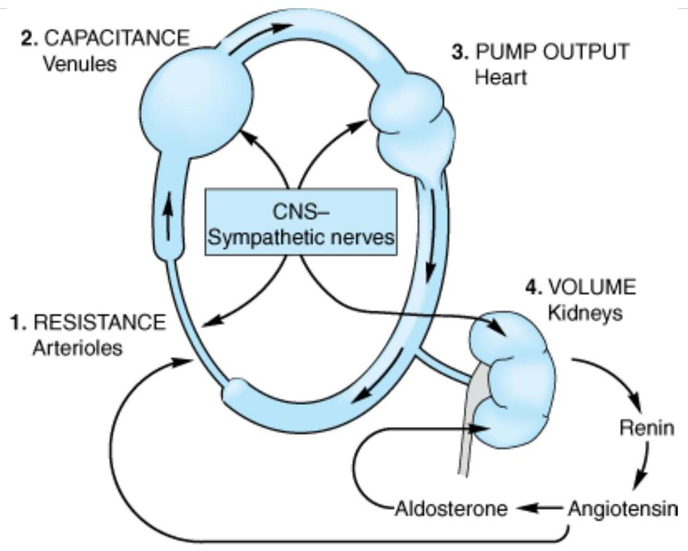
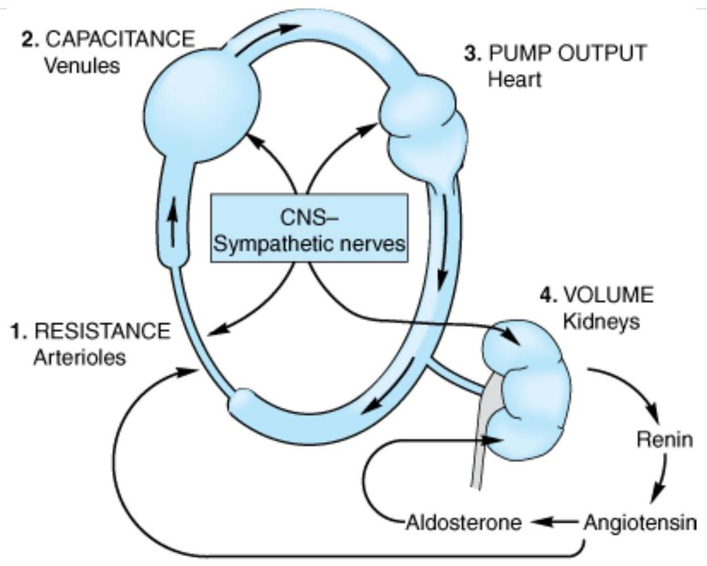
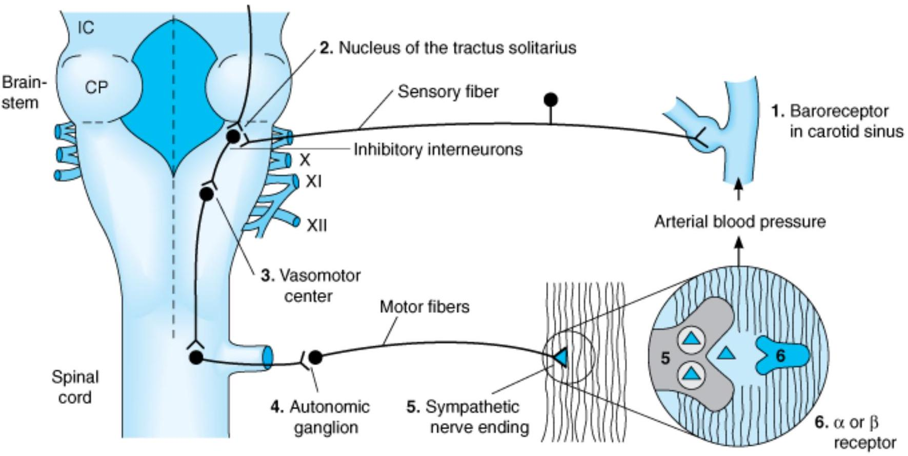
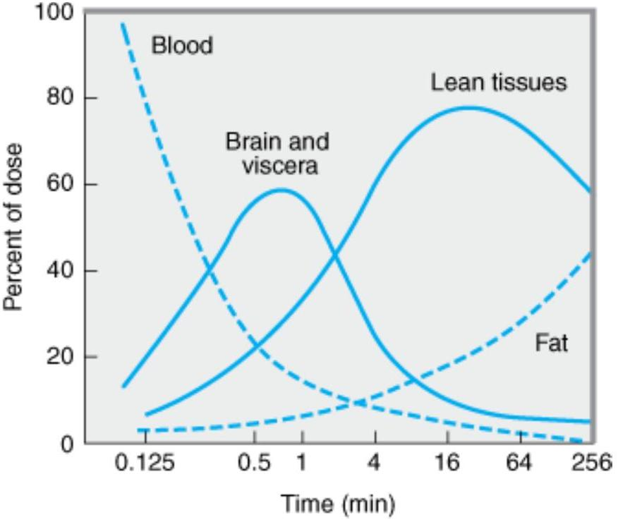

ANTI HYPERTENSI VE AGENTS
Hypertension is the most common cardiovascular disease. In a survey carried out in 2000, hypertension was found in 28% of American adults. According to a Framingham study of blood pressure trends in middle-aged and older individuals, approximately 90% of Caucasian Americans will develop hypertension in their lifetime. The prevalence varies with age, race, education, and many other variables. Sustained arterial hypertension damages blood vessels in kidney, heart, and brain and leads to an increased incidence of renal failure, coronary disease, cardiac failure, and stroke. Effective pharmacologic lowering of blood pressure has been shown to prevent damage to blood vessels and to substantially reduce morbidity and mortality rates. Unfortunately, several surveys indicate that only one third of Americans with hypertension have adequate blood pressure control. Many effective drugs are available. Knowledge of their antihypertensive mechanisms and sites of action allows accurate prediction of efficacy and toxicity. As a result, rational use of these agents, alone or in combination, can lower blood pressure with minimal risk of serious toxicity in most patients.
Hypertension & Regulation of Blood Pressure
Diagnosis
The diagnosis of hypertension is based on repeated, reproducible measurements of elevated blood pressure. The diagnosis serves primarily as a prediction of consequences for the patient; it seldom includes a statement about the cause of hypertension.
Epidemiologic studies indicate that the risks of damage to kidney, heart, and brain are directly related to the extent of blood pressure elevation. Even mild hypertension (blood pressure 140/90 mm Hg) increases the risk of eventual end organ damage. Starting at 115/75 mm Hg cardiovascular disease risk doubles with each increment of 20/10 mm Hg throughout the blood pressure range. The risks—and therefore the urgency of instituting therapy—increase in proportion to the magnitude of blood pressure elevation. The risk of end organ damage at any level of blood pressure or age is greater in African-Americans and relatively less in premenopausal women than in men. Other positive risk factors include smoking, hyperlipidemia, diabetes, manifestations of end organ damage at the time of diagnosis, and a family history of cardiovascular disease.
It should be noted that the diagnosis of hypertension depends on measurement of blood pressure and not on symptoms reported by the patient. In fact, hypertension is usually asymptomatic until overt end organ damage is imminent or has already occurred.
The diagnosis of hypertension is based on repeated, reproducible measurements of elevated blood pressure. The diagnosis serves primarily as a prediction of consequences for the patient; it seldom includes a statement about the cause of hypertension.
Epidemiologic studies indicate that the risks of damage to kidney, heart, and brain are directly related to the extent of blood pressure elevation. Even mild hypertension (blood pressure 140/90 mm Hg) increases the risk of eventual end organ damage. Starting at 115/75 mm Hg cardiovascular disease risk doubles with each increment of 20/10 mm Hg throughout the blood pressure range. The risks—and therefore the urgency of instituting therapy—increase in proportion to the magnitude of blood pressure elevation. The risk of end organ damage at any level of blood pressure or age is greater in African-Americans and relatively less in premenopausal women than in men. Other positive risk factors include smoking, hyperlipidemia, diabetes, manifestations of end organ damage at the time of diagnosis, and a family history of cardiovascular disease.
It should be noted that the diagnosis of hypertension depends on measurement of blood pressure and not on symptoms reported by the patient. In fact, hypertension is usually asymptomatic until overt end organ damage is imminent or has already occurred.
Etiology of Hypertension
A specific cause of hypertension can be established in only 10-15% of patients. It is important to consider specific causes in each case, however, because some of them are amenable to definitive surgical treatment: renal artery constriction, coarctation of the aorta, pheochromocytoma, Cushing's disease, and primary aldosteronism.
Patients in whom no specific cause of hypertension can be found are said to have essential hypertension. *
In most cases, elevated blood pressure is associated with an overall increase in resistance to flow of blood through arterioles, while cardiac output is usually normal. Meticulous investigation of autonomic nervous system function, baroreceptor reflexes, the renin-angiotensin-aldosterone system, and the kidney has failed to identify a primary abnormality as the cause of increased peripheral vascular resistance in essential
hypertension.
Elevated blood pressure is usually caused by a combination of several (multifactorial) abnormalities. Epidemiologic evidence points to genetic inheritance, psychological stress, and environmental and dietary factors (increased salt and decreased potassium or calcium intake) as perhaps contributing to the development of hypertension. Increase in blood pressure with aging does not occur in populations with low daily sodium intake. Patients with labile hypertension appear more likely than normal controls to have blood pressure elevations after salt loading.
The heritability of essential hypertension is estimated to be about 30%. Mutations in several genes have been linked to various rare causes of hypertension. Functional variations of the genes for angiotensinogen, angiotensin-converting enzyme (ACE), the $B_{2}$ adrenoceptor, and adducin (a cytoskeletal protein) appear to contribute to some cases of essential hypertension.
*The adjective originally was intended to convey the now abandoned idea that blood pressure elevation was essential for adequate perfusion of diseased tissues.
A specific cause of hypertension can be established in only 10-15% of patients. It is important to consider specific causes in each case, however, because some of them are amenable to definitive surgical treatment: renal artery constriction, coarctation of the aorta, pheochromocytoma, Cushing's disease, and primary aldosteronism.
Patients in whom no specific cause of hypertension can be found are said to have essential hypertension. * In most cases, elevated blood pressure is associated with an overall increase in resistance to flow of blood through arterioles, while cardiac output is usually normal. Meticulous investigation of autonomic nervous system function, baroreceptor reflexes, the renin-angiotensin-aldosterone system, and the kidney has failed to identify a primary abnormality as the cause of increased peripheral vascular resistance in essential hypertension.
Elevated blood pressure is usually caused by a combination of several (multifactorial) abnormalities. Epidemiologic evidence points to genetic inheritance, psychological stress, and environmental and dietary factors (increased salt and decreased potassium or calcium intake) as perhaps contributing to the development of hypertension. Increase in blood pressure with aging does not occur in populations with low daily sodium intake. Patients with labile hypertension appear more likely than normal controls to have blood pressure elevations after salt loading.
The heritability of essential hypertension is estimated to be about 30%. Mutations in several genes have been linked to various rare causes of hypertension. Functional variations of the genes for angiotensinogen, angiotensin-converting enzyme (ACE), the $B_{2}$ adrenoceptor, and adducin (a cytoskeletal protein) appear to contribute to some cases of essential hypertension.
*The adjective originally was intended to convey the now abandoned idea that blood pressure elevation was essential for adequate perfusion of diseased tissues.
Normal Regulation of Blood Pressure
According to the hydraulic equation, arterial blood pressure (BP) is directly proportionate to the product of the blood flow (cardiac output, CO) and the resistance to passage of blood through precapillary arterioles (peripheral vascular resistance, PVR):
$$
\text { BP = CO } \times \text { PVR}
$$
Physiologically, in both normal and hypertensive individuals, blood pressure is maintained by moment-to-moment regulation of cardiac output and peripheral vascular resistance, exerted at three anatomic sites (Figure 11-1): arterioles, postcapillary venules (capacitance vessels), and heart. A fourth anatomic control site, the kidney, contributes to maintenance of blood pressure by regulating the volume of intravascular fluid. Baroreflexes, mediated by autonomic nerves, act in combination with humoral mechanisms, including the renin-angiotensin-aldosterone system, to coordinate function at these four control sites and to maintain normal blood pressure. Finally, local release of vasoactive substances from vascular endothelium may also be involved in the regulation of vascular resistance. For example, endothelin-1 (see Chapter 17) constricts and nitric oxide (see Chapter 19) dilates blood vessels.

Copyright ©2006 by The McGraw-Hill Companies, Inc. All rights reserved.
Anatomic sites of blood pressure control.
Blood pressure in a hypertensive patient is controlled by the same mechanisms that are operative in normotensive subjects. Regulation of blood pressure in hypertensive patients differs from healthy patients in that the baroreceptors and the renal blood volume-pressure control systems appear to be "set" at a higher level of blood pressure. All antihypertensive drugs act by interfering with these normal mechanisms, which are reviewed below.
According to the hydraulic equation, arterial blood pressure (BP) is directly proportionate to the product of the blood flow (cardiac output, CO) and the resistance to passage of blood through precapillary arterioles (peripheral vascular resistance, PVR):
Physiologically, in both normal and hypertensive individuals, blood pressure is maintained by moment-to-moment regulation of cardiac output and peripheral vascular resistance, exerted at three anatomic sites (Figure 11-1): arterioles, postcapillary venules (capacitance vessels), and heart. A fourth anatomic control site, the kidney, contributes to maintenance of blood pressure by regulating the volume of intravascular fluid. Baroreflexes, mediated by autonomic nerves, act in combination with humoral mechanisms, including the renin-angiotensin-aldosterone system, to coordinate function at these four control sites and to maintain normal blood pressure. Finally, local release of vasoactive substances from vascular endothelium may also be involved in the regulation of vascular resistance. For example, endothelin-1 (see Chapter 17) constricts and nitric oxide (see Chapter 19) dilates blood vessels.
Copyright ©2006 by The McGraw-Hill Companies, Inc. All rights reserved.
Anatomic sites of blood pressure control.
Blood pressure in a hypertensive patient is controlled by the same mechanisms that are operative in normotensive subjects. Regulation of blood pressure in hypertensive patients differs from healthy patients in that the baroreceptors and the renal blood volume-pressure control systems appear to be "set" at a higher level of blood pressure. All antihypertensive drugs act by interfering with these normal mechanisms, which are reviewed below.
POSTURAL BAROREFLEX
(Figure 11-2) Baroreflexes are responsible for rapid, moment-to-moment adjustments in blood pressure, such as in transition from a reclining to an upright posture. Central sympathetic neurons arising from the vasomotor area of the medulla are tonically active. Carotid baroreceptors are stimulated by the stretch of the vessel walls brought about by the internal pressure (arterial blood pressure). Baroreceptor activation inhibits central sympathetic discharge. Conversely, reduction in stretch results in a reduction in baroreceptor activity. Thus, in the case of a transition to upright posture, baroreceptors sense the reduction in arterial pressure that results from pooling of blood in the veins below the level of the heart as reduced wall stretch, and sympathetic discharge is disinhibited. The reflex increase in sympathetic outflow acts through nerve endings to increase peripheral vascular resistance (constriction of arterioles) and cardiac output (direct stimulation of the heart and constriction of capacitance vessels, which increases venous return to the heart), thereby restoring normal blood pressure. The same baroreflex acts in response to any event that lowers arterial pressure, including a primary reduction in peripheral vascular resistance (eg, caused by a vasodilating agent) or a reduction in intravascular volume (eg, due to hemorrhage or to loss of salt and water via the kidney).
 Baroreceptors in carotid sinus/aortic arch -> Afferent nerves (glossopharyngeal/vagus) -> Medulla oblongata (vasomotor center) -> Decreased sympathetic outflow/Increased parasympathetic outflow -> Decreased heart rate/Decreased contractility/Vasodilation -> Decreased blood pressure." class="content-image">Copyright ©2006 by The McGraw-Hill Companies, Inc. All rights reserved.
Baroreceptor reflex arc.
RENAL RESPONSE TO DECREASED BLOOD PRESSURE
By controlling blood volume, the kidney is primarily responsible for long-term blood pressure control. A reduction in renal perfusion pressure causes intrarenal redistribution of blood flow and increased reabsorption of salt and water. In addition, decreased pressure in renal arterioles as well as sympathetic neural activity (via Badrenoceptors) stimulates production of renin, which increases production of angiotensin II (see Figure 11-1 and Chapter 17). Angiotensin II causes (1) direct constriction of resistance vessels and (2) stimulation of aldosterone synthesis in the adrenal cortex, which increases renal sodium absorption and intravascular blood volume. Vasopressin released from the posterior pituitary gland also plays a role in maintenance of blood pressure through its ability to regulate water reabsorption by the kidney (see Chapters 15 and 17).
BASI C PHARMACOLOGY OF ANTI HYPERTENSI VE AGENTS
All antihypertensive agents act at one or more of the four anatomic control sites depicted in Figure 11-1 and produce their effects by interfering with normal mechanisms of blood pressure regulation. A useful classification of these agents categorizes them according to the principal regulatory site or mechanism on which they act (Figure 11-3). Because of their common mechanisms of action, drugs within each category tend to produce a similar spectrum of toxicities. The categories include the following:
- (1) Diuretics, which lower blood pressure primarily by depleting the body of sodium and reducing blood volume and perhaps by other mechanisms.
- (2) Sympathoplegic agents, which lower blood pressure by reducing peripheral vascular resistance, inhibiting cardiac function, and increasing venous pooling in capacitance vessels. (The latter two effects reduce cardiac output.) These agents are further subdivided according to their putative sites of action in the sympathetic reflex arc (see below).
- (3) Direct vasodilators, which reduce pressure by relaxing vascular smooth muscle, thus dilating resistance vessels and—to varying degrees—increasing capacitance as well.
- (4) Agents that block production or action of angiotensin and thereby reduce peripheral vascular resistance and (potentially) blood volume.
Copyright ©2006 by The McGraw-Hill Companies, Inc. All rights reserved.
Sites of action of the major classes of antihypertensive drugs.
The fact that these drug groups act by different mechanisms permits the combination of drugs from two or more groups with increased efficacy and, in some cases, decreased toxicity. (See Monotherapy Versus Polypharmacy in Hypertension.)
Monotherapy versus Polypharmacy in Hypertension
Monotherapy of hypertension (treatment with a single drug) is desirable because compliance is likely to be better, cost is lower, and because in some cases adverse effects are fewer. However, most patients with hypertension require two or more drugs, each acting by a different mechanism (polypharmacy). The rationale for polypharmacy is that each of the drugs acts on one of a set of interacting, mutually compensatory regulatory mechanisms for maintaining blood pressure (see Figures 6-7 and 11-1).
For example, because an adequate dose of hydralazine causes a significant decrease in peripheral vascular resistance, there will initially be a drop in mean arterial blood pressure, evoking a strong response in the form of compensatory tachycardia and salt and water retention (Figure 11-4). The result is an increase in cardiac output that is capable of almost completely reversing the effect of hydralazine. The addition of a Bblocker prevents the tachycardia; addition of a diuretic (eg, hydrochlorothiazide) prevents the salt and water retention. In effect, all three drugs increase the sensitivity of the cardiovascular system to each other's actions. Thus, partial impairment of one regulatory mechanism (sympathetic discharge to the heart) increases the antihypertensive effect of impairing regulation by another mechanism (peripheral vascular resistance). Finally, in some circumstances, a normal compensatory response accounts for the toxicity of an antihypertensive agent, and the toxic effect can be prevented by administering a second type of drug. In the case of hydralazine, compensatory tachycardia and increased cardiac output may precipitate angina in patients with coronary atherosclerosis. Addition of the Bblocker and diuretic can prevent this toxicity in many patients.
![Figure 11-4. Compensatory responses to vasodilators; basis for combination therapy with beta-blockers and diuretics. Schematic flow chart illustrating how a vasodilator (e.g., Hydralazine) leads to reduced blood pressure, which triggers compensatory responses (Increased Sympathetic Outflow, Increased Renin Release). Increased Sympathetic Outflow leads to Increased Heart Rate and Contractility (blocked by beta-blockers) and Vasoconstriction. Increased Renin Release leads to Increased Angiotensin II and Aldosterone, causing Salt and Water Retention (blocked by diuretics) and Increased Blood Volume.](../assets/images/2025_05_20_5077f6d5de5c97219fafg-0310-1.jpg)
Copyright ©2006 by The McGraw-Hill Companies, Inc. All rights reserved.
Compensatory responses to vasodilators; basis for combination therapy with Bblockers and diuretics. 1 Effect blocked by diuretics. 2 Effect blocked by Bblockers.
In practice, when hypertension does not respond adequately to a regimen of one drug, a second drug from a different class with a different mechanism of action and different pattern of toxicity is added. If the response is still inadequate and compliance is known to be good, a third drug may be added. The drugs least likely to be successful as monotherapy are the vasodilators hydralazine and minoxidil. It is not completely clear why other vasodilators such as calcium channel blockers cause less marked compensatory responses for the same amount of blood pressure lowering.
Drugs That Alter Sodium & Water Balance
Dietary sodium restriction has been known for many years to decrease blood pressure in hypertensive patients. With the advent of diuretics, sodium restriction was thought to be less important. However, there is now general agreement that dietary control of blood pressure is a relatively nontoxic therapeutic measure and may even be preventive. Several studies have shown that even modest dietary sodium restriction lowers blood pressure (although to varying extents) in many hypertensive individuals.
Mechanisms of Action & Hemodynamic Effects of Diuretics
Diuretics lower blood pressure primarily by depleting body sodium stores. Initially, diuretics reduce blood pressure by reducing blood volume and cardiac output; peripheral vascular resistance may increase. After 6-8 weeks, cardiac output returns toward normal while peripheral vascular resistance declines. Sodium is believed to contribute to vascular resistance by increasing vessel stiffness and neural reactivity, possibly related to increased sodium-calcium exchange with a resultant increase in intracellular calcium.
Some diuretics have direct vasodilating effects in addition to their diuretic action. Indapamide is a nonthiazide sulfonamide diuretic with both diuretic and vasodilator activity. As a consequence of vasodilation, cardiac output remains unchanged or increases slightly. Amiloride inhibits smooth muscle responses to contractile stimuli, probably through effects on transmembrane and intracellular calcium movement that are independent of its action on sodium excretion.
Diuretics are effective in lowering blood pressure by 10-15 mm Hg in most patients, and diuretics alone often provide adequate treatment for mild or moderate essential hypertension. In more severe hypertension, diuretics are used in combination with sympathoplegic and vasodilator drugs to control the tendency toward sodium retention caused by these agents. Vascular responsiveness—ie, the ability to either constrict or dilate—is diminished by sympathoplegic and vasodilator drugs, so that the vasculature behaves like an inflexible tube. As a consequence, blood pressure becomes exquisitely sensitive to blood volume. Thus, in severe hypertension, when multiple drugs are used, blood pressure may be well controlled when blood volume is 95% of normal but much too high when blood volume is 105% of normal.
Use of Diuretics
The sites of action within the kidney and the pharmacokinetics of various diuretic drugs are discussed in Chapter 15. Thiazide diuretics are appropriate for most patients with mild or moderate hypertension and normal renal and cardiac function. More powerful diuretics (eg, those acting on the loop of Henle) are necessary in severe hypertension, when multiple drugs with sodium-retaining properties are used; in renal insufficiency, when glomerular filtration rate is less than 30 or 40 mL/min; and in cardiac failure or cirrhosis, where sodium retention is marked.
Potassium-sparing diuretics are useful both to avoid excessive potassium depletion, particularly in patients taking digitalis, and to enhance the natriuretic effects of other diuretics. Aldosterone receptor antagonists in particular also have a favorable effect on cardiac function in people with heart failure.
Some pharmacokinetic characteristics and the initial and usual maintenance dosages of hydrochlorothiazide are listed in Table 11-1. Although thiazide diuretics are more natriuretic at higher doses (up to 100-200 mg of hydrochlorothiazide), when used as a single agent, lower doses (25-50 mg) exert as much antihypertensive effect as do higher doses. In contrast to thiazides, the blood pressure response to loop diuretics continues to increase at doses many times greater than the usual therapeutic dose.
| Drug | Half-life (h) | Bioavailability (percent) | Suggested Initial Dose | Usual Maintenance Dose Range | Reduction of Dosage Required in Moderate Renal Insufficiency ${}^{1}$ |
|---|---|---|---|---|---|
| Amlodipine | 35 | 65 | 2.5 mg/d | 5.5-10 mg/d | No |
| Atenolol | 6 | 60 | 50 mg/d | 50-100 mg/d | Yes |
| Benazepril | 0.6${}^{2}$ | 35 | 5-10 mg/d | 20-40 mg/d | Yes |
| Captopril | 2.2 | 65 | 50-75 mg/d | 75-150 mg/d | Yes |
| Clonidine | 8-12 | 95 | 0.2 mg/d | 0.2-1.2 mg/d | Yes |
| Diltiazem | 3.5 | 40 | 120-140 mg/d | 240-360 mg/d | No |
| Guanethidine | 5d | 3-50 | 10 mg/d | 25-50 mg/d | Possible |
| Hydralazine | 1.5-3 | 25 | 40 mg/d | 40-200 mg/d | No |
| Hydrochlorothiazide | 12 | 70 | 25 mg/d | 25-50 mg/d | No |
| Lisinopril | 12 | 25 | 10 mg/d | 10-80 mg/d | Yes |
| Losartan | 1-2${}^{3}$ | 36 | 50 mg/d | 25-100 mg/d | No |
| Methyldopa | 2 | 25 | 1 g/d | 1-2 g/d | No |
| Metoprolol | 3-7 | 40 | 50-100 mg/d | 200-400 mg/d | No |
| Minoxidil | 4 | 90 | 5-10 mg/d | 40 mg/d | No |
| Nifedipine | 2 | 50 | 30 mg/d | 30-60 mg/d | No |
| Prazosin | 3-4 | 3 mg/d | 10-30 mg/d | No | |
| Propranolol | 3-5 | 25 | 80 mg/d | 80-480 mg/d | No |
| Reserpine | 24-48 | 50 | 0.25 mg/d | 0.25 mg/d | No |
| Verapamil | 4-6 | 22 | 180 mg/d | 240-480 mg/d | No |
${}^{1}$ Creatinine clearance $\equiv$ 30 mL/min. Many of these drugs do require dosage adjustment if creatinine clearance falls below 30 mL/min.
${}^{2}$ The active metabolite of benazepril has a half-life of 10 h .
${}^{3}$ The active metabolite of losartan has a half-life of 3-4 hours.
Toxicity of Diuretics
In the treatment of hypertension, the most common adverse effect of diuretics (except for potassium-sparing diuretics) is potassium depletion. Although mild degrees of hypokalemia are tolerated well by many patients, hypokalemia may be hazardous in persons taking digitalis, those who have chronic arrhythmias, or those with acute myocardial infarction or left ventricular dysfunction. Potassium loss is coupled to reabsorption of
sodium, and restriction of dietary sodium intake will therefore minimize potassium loss. Diuretics may also cause magnesium depletion, impair glucose tolerance, and increase serum lipid concentrations. Diuretics increase uric acid concentrations and may precipitate gout. The use of low doses minimizes these adverse metabolic effects without impairing the antihypertensive action. Several case-control studies have reported a small but significant excess risk of renal cell carcinoma associated with diuretic use. Potassium-sparing diuretics may produce hyperkalemia, particularly in patients with renal insufficiency and those taking ACE inhibitors or angiotension receptor blockers; spironolactone (a steroid) is associated with gynecomastia.
In the treatment of hypertension, the most common adverse effect of diuretics (except for potassium-sparing diuretics) is potassium depletion. Although mild degrees of hypokalemia are tolerated well by many patients, hypokalemia may be hazardous in persons taking digitalis, those who have chronic arrhythmias, or those with acute myocardial infarction or left ventricular dysfunction. Potassium loss is coupled to reabsorption of sodium, and restriction of dietary sodium intake will therefore minimize potassium loss. Diuretics may also cause magnesium depletion, impair glucose tolerance, and increase serum lipid concentrations. Diuretics increase uric acid concentrations and may precipitate gout. The use of low doses minimizes these adverse metabolic effects without impairing the antihypertensive action. Several case-control studies have reported a small but significant excess risk of renal cell carcinoma associated with diuretic use. Potassium-sparing diuretics may produce hyperkalemia, particularly in patients with renal insufficiency and those taking ACE inhibitors or angiotension receptor blockers; spironolactone (a steroid) is associated with gynecomastia.
Drugs That Alter Sympathetic Nervous System Function
In patients with moderate to severe hypertension, most effective drug regimens include an agent that inhibits function of the sympathetic nervous system. Drugs in this group are classified according to the site at which they impair the sympathetic reflex arc (Figure 11-2). This neuroanatomic classification explains prominent differences in cardiovascular effects of drugs and allows the clinician to predict interactions of these drugs with one another and with other drugs.
Most importantly, the subclasses of drugs exhibit different patterns of potential toxicity. Drugs that lower blood pressure by actions on the central nervous system tend to cause sedation and mental depression and may produce disturbances of sleep, including nightmares. Drugs that act by inhibiting transmission through autonomic ganglia produce toxicity from inhibition of parasympathetic regulation, in addition to profound sympathetic blockade. Drugs that act chiefly by reducing release of norepinephrine from sympathetic nerve endings cause effects that are similar to those of surgical sympathectomy, including inhibition of ejaculation, and hypotension that is increased by upright posture and after exercise. Drugs that block postsynaptic adrenoceptors produce a more selective spectrum of effects depending on the class of receptor to which they bind.
Finally, one should note that all of the agents that lower blood pressure by altering sympathetic function can elicit compensatory effects through mechanisms that are not dependent on adrenergic nerves. Thus, the antihypertensive effect of any of these agents used alone may be limited by retention of sodium by the kidney and expansion of blood volume. For these reasons, sympathoplegic antihypertensive drugs are most effective when used concomitantly with a diuretic.
CENTRALLY ACTI NG SYMPATHOPLEGI C DRUGS
Mechanisms & Sites of Action
These agents reduce sympathetic outflow from vasopressor centers in the brainstem but allow these centers to retain or even increase their sensitivity to baroreceptor control. Accordingly, the antihypertensive and toxic actions of these drugs are generally less dependent on posture than are the effects of drugs that act directly on peripheral sympathetic neurons.
Methyldopa ( L-a-methyl-3,4-dihydroxyphenylalanine) is an analog of L-dopa and is converted to a.methyldopamine and $\alpha$-methylnorepinephrine; this pathway directly parallels the synthesis of norepinephrine from dopa illustrated in Figure 6-5. Alpha-methylnorepinephrine is stored in adrenergic nerve vesicles, where it stoichiometrically replaces norepinephrine, and is released by nerve stimulation to interact with postsynaptic adrenoceptors. However, this replacement of norepinephrine by a false transmitter in peripheral neurons is not responsible for methyldopa's antihypertensive effect, because the a-methylnorepinephrine released is an effective agonist at the cadrenoceptors that mediate peripheral sympathetic constriction of
arterioles and venules.
In fact, methyldopa's antihypertensive action appears to be due to stimulation of central a cadrenoceptors by -methylnorepinephrine or a-methyldopamine, based on the following evidence: (1) Much lower doses of methyldopa are required to lower blood pressure in animals when the drug is administered centrally by injection into the cerebral ventricles rather than intravenously. (2) Alpha-receptor antagonists, especially $\omega_{2}$ selective antagonists, administered centrally, block the antihypertensive effect of methyldopa, whether the latter is given centrally or intravenously. (3) Potent inhibitors of dopa decarboxylase, administered centrally, block methyldopa's antihypertensive effect, thus showing that metabolism of the parent drug in the central nervous system is necessary for its action.
The antihypertensive action of clonidine, a 2-imidazoline derivative, was discovered in the course of testing the drug for use as a topically applied nasal decongestant.
After intravenous injection, clonidine produces a brief rise in blood pressure followed by more prolonged hypotension. The pressor response is due to direct stimulation of adrenoceptors in arterioles. The drug is classified as a partial agonist at areceptors because it also inhibits pressor effects of other a.agonists.
Considerable evidence indicates that the hypotensive effect of clonidine is exerted at adrenoceptors in the medulla of the brain. In animals, the hypotensive effect of clonidine is prevented by central administration of a.antagonists. Clonidine reduces sympathetic and increases parasympathetic tone, resulting in blood pressure lowering and bradycardia. The reduction in pressure is accompanied by a decrease in circulating catecholamine levels. These observations suggest that clonidine sensitizes brainstem pressor centers to inhibition by baroreflexes.
Thus, studies of clonidine and methyldopa suggest that normal regulation of blood pressure involves central adrenergic neurons that modulate baroreceptor reflexes. Clonidine and a.-methylnorepinephrine bind more tightly to $\alpha_{2}$ than to $\alpha_{1}$ adrenoceptors. As noted in Chapter 6, $\alpha_{2}$ receptors are located on presynaptic adrenergic neurons as well as some postsynaptic sites. It is possible that clonidine and a.methylnorepinephrine act in the brain to reduce norepinephrine release onto relevant receptor sites. Alternatively, these drugs may act on postsynaptic 2 adrenoceptors to inhibit activity of appropriate neurons. Finally, clonidine also binds to a nonadrenoceptor site, the imidazoline receptor, which may also mediate antihypertensive effects.
Methyldopa and clonidine produce slightly different hemodynamic effects: clonidine lowers heart rate and cardiac output more than does methyldopa. This difference suggests that these two drugs do not have identical sites of action. They may act primarily on different populations of neurons in the vasomotor centers of the brainstem.
Guanabenz and guanfacine are centrally active antihypertensive drugs that share the central a.-adrenoceptor-stimulating effects of clonidine. They do not appear to offer any advantages over clonidine.
These agents reduce sympathetic outflow from vasopressor centers in the brainstem but allow these centers to retain or even increase their sensitivity to baroreceptor control. Accordingly, the antihypertensive and toxic actions of these drugs are generally less dependent on posture than are the effects of drugs that act directly on peripheral sympathetic neurons.
Methyldopa ( L-a-methyl-3,4-dihydroxyphenylalanine) is an analog of L-dopa and is converted to a.methyldopamine and $\alpha$-methylnorepinephrine; this pathway directly parallels the synthesis of norepinephrine from dopa illustrated in Figure 6-5. Alpha-methylnorepinephrine is stored in adrenergic nerve vesicles, where it stoichiometrically replaces norepinephrine, and is released by nerve stimulation to interact with postsynaptic adrenoceptors. However, this replacement of norepinephrine by a false transmitter in peripheral neurons is not responsible for methyldopa's antihypertensive effect, because the a-methylnorepinephrine released is an effective agonist at the cadrenoceptors that mediate peripheral sympathetic constriction of arterioles and venules.
In fact, methyldopa's antihypertensive action appears to be due to stimulation of central a cadrenoceptors by -methylnorepinephrine or a-methyldopamine, based on the following evidence: (1) Much lower doses of methyldopa are required to lower blood pressure in animals when the drug is administered centrally by injection into the cerebral ventricles rather than intravenously. (2) Alpha-receptor antagonists, especially $\omega_{2}$ selective antagonists, administered centrally, block the antihypertensive effect of methyldopa, whether the latter is given centrally or intravenously. (3) Potent inhibitors of dopa decarboxylase, administered centrally, block methyldopa's antihypertensive effect, thus showing that metabolism of the parent drug in the central nervous system is necessary for its action.
The antihypertensive action of clonidine, a 2-imidazoline derivative, was discovered in the course of testing the drug for use as a topically applied nasal decongestant.
After intravenous injection, clonidine produces a brief rise in blood pressure followed by more prolonged hypotension. The pressor response is due to direct stimulation of adrenoceptors in arterioles. The drug is classified as a partial agonist at areceptors because it also inhibits pressor effects of other a.agonists.
Considerable evidence indicates that the hypotensive effect of clonidine is exerted at adrenoceptors in the medulla of the brain. In animals, the hypotensive effect of clonidine is prevented by central administration of a.antagonists. Clonidine reduces sympathetic and increases parasympathetic tone, resulting in blood pressure lowering and bradycardia. The reduction in pressure is accompanied by a decrease in circulating catecholamine levels. These observations suggest that clonidine sensitizes brainstem pressor centers to inhibition by baroreflexes.
Thus, studies of clonidine and methyldopa suggest that normal regulation of blood pressure involves central adrenergic neurons that modulate baroreceptor reflexes. Clonidine and a.-methylnorepinephrine bind more tightly to $\alpha_{2}$ than to $\alpha_{1}$ adrenoceptors. As noted in Chapter 6, $\alpha_{2}$ receptors are located on presynaptic adrenergic neurons as well as some postsynaptic sites. It is possible that clonidine and a.methylnorepinephrine act in the brain to reduce norepinephrine release onto relevant receptor sites. Alternatively, these drugs may act on postsynaptic 2 adrenoceptors to inhibit activity of appropriate neurons. Finally, clonidine also binds to a nonadrenoceptor site, the imidazoline receptor, which may also mediate antihypertensive effects.
Methyldopa and clonidine produce slightly different hemodynamic effects: clonidine lowers heart rate and cardiac output more than does methyldopa. This difference suggests that these two drugs do not have identical sites of action. They may act primarily on different populations of neurons in the vasomotor centers of the brainstem.
Guanabenz and guanfacine are centrally active antihypertensive drugs that share the central a.-adrenoceptor-stimulating effects of clonidine. They do not appear to offer any advantages over clonidine.
METHYLDOPA
Methyldopa is useful in the treatment of mild to moderately severe hypertension. It lowers blood pressure chiefly by reducing peripheral vascular resistance, with a variable reduction in heart rate and cardiac output.
Most cardiovascular reflexes remain intact after administration of methyldopa, and blood pressure reduction is
not markedly dependent on maintenance of upright posture. Postural (orthostatic) hypotension sometimes occurs, particularly in volume-depleted patients. One potential advantage of methyldopa is that it causes reduction in renal vascular resistance.
$$
\text { CC(N)(Cc1ccc(O)c(O)c1)C(=O)O }
$$
$\alpha$-Methyldopa
( $\alpha$-methyl group in color)
Pharmacokinetics & Dosage
Pharmacokinetic characteristics of methyldopa are listed in Table 11-1. Methyldopa enters the brain via an aromatic amino acid transporter. The usual oral dose of methyldopa produces its maximal antihypertensive effect in 4-6 hours, and the effect can persist for up to 24 hours. Because the effect depends on accumulation and storage of a metabolite (c.-methylnorepinephrine) in the vesicles of nerve endings, the action persists after the parent drug has disappeared from the circulation.
Toxicity
The most frequent undesirable effect of methyldopa is overt sedation, particularly at the onset of treatment. With long-term therapy, patients may complain of persistent mental lassitude and impaired mental concentration. Nightmares, mental depression, vertigo, and extrapyramidal signs may occur but are relatively infrequent. Lactation, associated with increased prolactin secretion, can occur both in men and in women treated with methyldopa. This toxicity is probably mediated by inhibition of dopaminergic mechanisms in the hypothalamus.
Other important adverse effects of methyldopa are development of a positive Coombs test (occurring in 10-20% of patients undergoing therapy for longer than 12 months), which sometimes makes cross-matching blood for transfusion difficult and rarely is associated with hemolytic anemia, as well as hepatitis and drug fever. Discontinuation of the drug usually results in prompt reversal of these abnormalities.
Methyldopa is useful in the treatment of mild to moderately severe hypertension. It lowers blood pressure chiefly by reducing peripheral vascular resistance, with a variable reduction in heart rate and cardiac output.
Most cardiovascular reflexes remain intact after administration of methyldopa, and blood pressure reduction is not markedly dependent on maintenance of upright posture. Postural (orthostatic) hypotension sometimes occurs, particularly in volume-depleted patients. One potential advantage of methyldopa is that it causes reduction in renal vascular resistance.
$\alpha$-Methyldopa
( $\alpha$-methyl group in color)
Pharmacokinetics & Dosage
Pharmacokinetic characteristics of methyldopa are listed in Table 11-1. Methyldopa enters the brain via an aromatic amino acid transporter. The usual oral dose of methyldopa produces its maximal antihypertensive effect in 4-6 hours, and the effect can persist for up to 24 hours. Because the effect depends on accumulation and storage of a metabolite (c.-methylnorepinephrine) in the vesicles of nerve endings, the action persists after the parent drug has disappeared from the circulation.
Toxicity
The most frequent undesirable effect of methyldopa is overt sedation, particularly at the onset of treatment. With long-term therapy, patients may complain of persistent mental lassitude and impaired mental concentration. Nightmares, mental depression, vertigo, and extrapyramidal signs may occur but are relatively infrequent. Lactation, associated with increased prolactin secretion, can occur both in men and in women treated with methyldopa. This toxicity is probably mediated by inhibition of dopaminergic mechanisms in the hypothalamus.
Other important adverse effects of methyldopa are development of a positive Coombs test (occurring in 10-20% of patients undergoing therapy for longer than 12 months), which sometimes makes cross-matching blood for transfusion difficult and rarely is associated with hemolytic anemia, as well as hepatitis and drug fever. Discontinuation of the drug usually results in prompt reversal of these abnormalities.
CLONI DI NE
Hemodynamic studies indicate that blood pressure lowering by clonidine results from reduction of cardiac output due to decreased heart rate and relaxation of capacitance vessels, with a reduction in peripheral vascular resistance, particularly when patients are upright (when sympathetic tone is normally increased).
Reduction in arterial blood pressure by clonidine is accompanied by decreased renal vascular resistance and maintenance of renal blood flow. As with methyldopa, clonidine reduces blood pressure in the supine position and only rarely causes postural hypotension. Pressor effects of clonidine are not observed after ingestion of therapeutic doses of clonidine, but severe hypertension can complicate a massive overdose.
$$
\text { Clc1cccc(Cl)c1NC1=NCCN1 }
$$
Clonidine
Pharmacokinetics & Dosage
See Table 11-1.
Clonidine is lipid-soluble and rapidly enters the brain from the circulation. Because of its relatively short halflife and the fact that its antihypertensive effect is directly related to blood concentration, oral clonidine must be given twice a day (or as a patch, below) to maintain smooth blood pressure control. However, as is not the case with methyldopa, the dose-response curve of clonidine is such that increasing doses are more effective (but also more toxic).
A transdermal preparation of clonidine that reduces blood pressure for 7 days after a single application is also available. This preparation appears to produce less sedation than clonidine tablets but is often associated with local skin reactions.
Toxicity
Dry mouth and sedation are frequent and may be severe. Both effects are centrally mediated and dosedependent and coincide temporally with the drug's antihypertensive effect.
The drug should not be given to patients who are at risk for mental depression and should be withdrawn if depression occurs during therapy. Concomitant treatment with tricyclic antidepressants may block the antihypertensive effect of clonidine. The interaction is believed to be due to a of the tricyclics.
Withdrawal of clonidine after protracted use, particularly with high dosages (greater than 1 mg/d), can result in life-threatening hypertensive crisis mediated by increased sympathetic nervous activity. Patients exhibit nervousness, tachycardia, headache, and sweating after omitting one or two doses of the drug. Although the incidence of severe hypertensive crisis is unknown, it is high enough to require that all patients who take clonidine be carefully warned of the possibility. If the drug must be stopped, this should be done gradually while other antihypertensive agents are being substituted. Treatment of the hypertensive crisis consists of reinstitution of clonidine therapy or administration of $\alpha$ - and $\beta$-adrenoceptor-blocking agents.
Hemodynamic studies indicate that blood pressure lowering by clonidine results from reduction of cardiac output due to decreased heart rate and relaxation of capacitance vessels, with a reduction in peripheral vascular resistance, particularly when patients are upright (when sympathetic tone is normally increased).
Reduction in arterial blood pressure by clonidine is accompanied by decreased renal vascular resistance and maintenance of renal blood flow. As with methyldopa, clonidine reduces blood pressure in the supine position and only rarely causes postural hypotension. Pressor effects of clonidine are not observed after ingestion of therapeutic doses of clonidine, but severe hypertension can complicate a massive overdose.
Clonidine
Pharmacokinetics & Dosage
See Table 11-1.
Clonidine is lipid-soluble and rapidly enters the brain from the circulation. Because of its relatively short halflife and the fact that its antihypertensive effect is directly related to blood concentration, oral clonidine must be given twice a day (or as a patch, below) to maintain smooth blood pressure control. However, as is not the case with methyldopa, the dose-response curve of clonidine is such that increasing doses are more effective (but also more toxic).
A transdermal preparation of clonidine that reduces blood pressure for 7 days after a single application is also available. This preparation appears to produce less sedation than clonidine tablets but is often associated with local skin reactions.
Toxicity
Dry mouth and sedation are frequent and may be severe. Both effects are centrally mediated and dosedependent and coincide temporally with the drug's antihypertensive effect.
The drug should not be given to patients who are at risk for mental depression and should be withdrawn if depression occurs during therapy. Concomitant treatment with tricyclic antidepressants may block the antihypertensive effect of clonidine. The interaction is believed to be due to a of the tricyclics.
Withdrawal of clonidine after protracted use, particularly with high dosages (greater than 1 mg/d), can result in life-threatening hypertensive crisis mediated by increased sympathetic nervous activity. Patients exhibit nervousness, tachycardia, headache, and sweating after omitting one or two doses of the drug. Although the incidence of severe hypertensive crisis is unknown, it is high enough to require that all patients who take clonidine be carefully warned of the possibility. If the drug must be stopped, this should be done gradually while other antihypertensive agents are being substituted. Treatment of the hypertensive crisis consists of reinstitution of clonidine therapy or administration of $\alpha$ - and $\beta$-adrenoceptor-blocking agents.
GANGLI ON-BLOCKI NG AGENTS
Historically, drugs that block stimulation of postganglionic autonomic neurons by acetylcholine were among the first agents used in the treatment of hypertension. Most such drugs are no longer available clinically because of intolerable toxicities related to their primary action (see below).
Ganglion blockers competitively block nicotinic cholinoceptors on postganglionic neurons in both sympathetic and parasympathetic ganglia. In addition, these drugs may directly block the nicotinic acetylcholine channel, in the same fashion as neuromuscular nicotinic blockers (see Figure 27-6).
The adverse effects of ganglion blockers are direct extensions of their pharmacologic effects. These effects include both sympathoplegia (excessive orthostatic hypotension and sexual dysfunction) and parasympathoplegia (constipation, urinary retention, precipitation of glaucoma, blurred vision, dry mouth, etc). These severe toxicities are the major reason for the abandonment of ganglion blockers for the therapy of hypertension.
Historically, drugs that block stimulation of postganglionic autonomic neurons by acetylcholine were among the first agents used in the treatment of hypertension. Most such drugs are no longer available clinically because of intolerable toxicities related to their primary action (see below).
Ganglion blockers competitively block nicotinic cholinoceptors on postganglionic neurons in both sympathetic and parasympathetic ganglia. In addition, these drugs may directly block the nicotinic acetylcholine channel, in the same fashion as neuromuscular nicotinic blockers (see Figure 27-6).
The adverse effects of ganglion blockers are direct extensions of their pharmacologic effects. These effects include both sympathoplegia (excessive orthostatic hypotension and sexual dysfunction) and parasympathoplegia (constipation, urinary retention, precipitation of glaucoma, blurred vision, dry mouth, etc). These severe toxicities are the major reason for the abandonment of ganglion blockers for the therapy of hypertension.
ADRENERGIC NEURON- BLOCKI NG AGENTS
These drugs lower blood pressure by preventing normal physiologic release of norepinephrine from postganglionic sympathetic neurons.
GUANETHI DI NE
In high enough doses, guanethidine can produce profound sympathoplegia. The resulting high maximal efficacy of this agent made it the mainstay of outpatient therapy of severe hypertension for many years. For the same reason, guanethidine can produce all of the toxicities expected from "pharmacologic sympathectomy," including marked postural hypotension, diarrhea, and impaired ejaculation. Because of these adverse effects, guanethidine is now rarely used.
Guanethidine is too polar to enter the central nervous system. As a result, this drug has none of the central effects seen with many of the other antihypertensive agents described in this chapter.
Guanadrel is a guanethidine-like drug that is available in the USA. Bethanidine and debrisoquin, antihypertensive agents not available for clinical use in the USA, are similar to guanethidine in mechanism of antihypertensive action.
Mechanism & Sites of Action
Guanethidine inhibits the release of norepinephrine from sympathetic nerve endings (see Figure 6-4). This effect is probably responsible for most of the sympathoplegia that occurs in patients. Guanethidine is transported across the sympathetic nerve membrane by the same mechanism that transports norepinephrine itself (NET, uptake 1), and uptake is essential for the drug's action. Once guanethidine has entered the nerve, it is concentrated in transmitter vesicles, where it replaces norepinephrine. Because it replaces norepinephrine, the drug causes a gradual depletion of norepinephrine stores in the nerve ending.
Inhibition of norepinephrine release is probably caused by guanethidine's local anesthetic properties on sympathetic nerve terminals. Although the drug does not impair axonal conduction in sympathetic fibers, local blockade of membrane electrical activity may occur in nerve endings because the nerve endings specifically take up and concentrate the drug.
Because neuronal uptake is necessary for the hypotensive activity of guanethidine, drugs that block the catecholamine uptake process or displace amines from the nerve terminal (see Chapter 6) block its effects. These include cocaine, amphetamine, tricyclic antidepressants, phenothiazines, and phenoxybenzamine.
Guanethidine increases sensitivity to the hypertensive effects of exogenously administered sympathomimetic amines. This results from inhibition of neuronal uptake of such amines and, after long-term therapy with guanethidine, supersensitivity of effector smooth muscle cells, in a fashion analogous to the process that follows surgical sympathectomy (see Chapter 6).
The hypotensive action of guanethidine early in the course of therapy is associated with reduced cardiac output, due to bradycardia and relaxation of capacitance vessels. With long-term therapy, peripheral vascular
resistance decreases. Compensatory sodium and water retention may be marked during guanethidine therapy.
Pharmacokinetics & Dosage
Because of its long half-life (5 days) the onset of sympathoplegia is gradual (maximal effect in 1-2 weeks), and sympathoplegia persists for a comparable period after cessation of therapy. The dose should not ordinarily be increased at intervals shorter than 2 weeks.
Toxicity
Therapeutic use of guanethidine is often associated with symptomatic postural hypotension and hypotension following exercise, particularly when the drug is given in high doses, and may produce dangerously decreased blood flow to heart and brain or even overt shock. Guanethidine-induced sympathoplegia in men may be associated with delayed or retrograde ejaculation (into the bladder). Guanethidine commonly causes diarrhea, which results from increased gastrointestinal motility due to parasympathetic predominance in controlling the activity of intestinal smooth muscle.
Interactions with other drugs may complicate guanethidine therapy. Sympathomimetic agents, at doses available in over-the-counter cold preparations, can produce hypertension in patients taking guanethidine. Similarly, guanethidine can produce hypertensive crisis by releasing catecholamines in patients with pheochromocytoma. When tricyclic antidepressants are administered to patients taking guanethidine, the drug's antihypertensive effect is attenuated, and severe hypertension may follow.
RESERPINE
Reserpine, an alkaloid extracted from the roots of an Indian plant, Rauwolfia serpentina, was one of the first effective drugs used on a large scale in the treatment of hypertension. At present, it is considered an effective and relatively safe drug for treating mild to moderate hypertension.
Mechanism & Sites of Action
Reserpine blocks the ability of aminergic transmitter vesicles to take up and store biogenic amines, probably by interfering with the vesicular membrane-associated transporter (VMAT, see Figure 6-4). This effect occurs throughout the body, resulting in depletion of norepinephrine, dopamine, and serotonin in both central and peripheral neurons. Chromaffin granules of the adrenal medulla are also depleted of catecholamines, although to a lesser extent than are the vesicles of neurons. Reserpine's effects on adrenergic vesicles appear irreversible; trace amounts of the drug remain bound to vesicular membranes for many days. Although sufficiently high doses of reserpine in animals can reduce catecholamine stores to zero, lower doses cause inhibition of neurotransmission that is roughly proportionate to the degree of amine depletion.
Depletion of peripheral amines probably accounts for much of the beneficial antihypertensive effect of reserpine, but a central component cannot be ruled out. The effects of low but clinically effective doses resemble those of centrally acting agents (eg, methyldopa) in that sympathetic reflexes remain largely intact, blood pressure is reduced in supine as well as in standing patients, and postural hypotension is mild. Reserpine readily enters the brain, and depletion of cerebral amine stores causes sedation, mental depression, and parkinsonism symptoms.
At lower doses used for treatment of mild hypertension, reserpine lowers blood pressure by a combination of decreased cardiac output and decreased peripheral vascular resistance.
Pharmacokinetics & Dosage
See Table 11-1.
Toxicity
At the low doses usually administered, reserpine produces little postural hypotension. Most of the unwanted effects of reserpine result from actions on the brain or gastrointestinal tract.
High doses of reserpine characteristically produce sedation, lassitude, nightmares, and severe mental depression; occasionally, these occur even in patients receiving low doses ( 0.25 mg/d ). Much less frequently, ordinary low doses of reserpine produce extrapyramidal effects resembling Parkinson's disease, probably as a result of dopamine depletion in the corpus striatum. Although these central effects are uncommon, it should be stressed that they may occur at any time, even after months of uneventful treatment. Patients with a history of mental depression should not receive reserpine, and the drug should be stopped if depression appears.
Reserpine rather often produces mild diarrhea and gastrointestinal cramps and increases gastric acid secretion. The drug should probably not be given to patients with a history of peptic ulcer.
These drugs lower blood pressure by preventing normal physiologic release of norepinephrine from postganglionic sympathetic neurons.
GUANETHI DI NE
In high enough doses, guanethidine can produce profound sympathoplegia. The resulting high maximal efficacy of this agent made it the mainstay of outpatient therapy of severe hypertension for many years. For the same reason, guanethidine can produce all of the toxicities expected from "pharmacologic sympathectomy," including marked postural hypotension, diarrhea, and impaired ejaculation. Because of these adverse effects, guanethidine is now rarely used.
Guanethidine is too polar to enter the central nervous system. As a result, this drug has none of the central effects seen with many of the other antihypertensive agents described in this chapter.
Guanadrel is a guanethidine-like drug that is available in the USA. Bethanidine and debrisoquin, antihypertensive agents not available for clinical use in the USA, are similar to guanethidine in mechanism of antihypertensive action.
Mechanism & Sites of Action
Guanethidine inhibits the release of norepinephrine from sympathetic nerve endings (see Figure 6-4). This effect is probably responsible for most of the sympathoplegia that occurs in patients. Guanethidine is transported across the sympathetic nerve membrane by the same mechanism that transports norepinephrine itself (NET, uptake 1), and uptake is essential for the drug's action. Once guanethidine has entered the nerve, it is concentrated in transmitter vesicles, where it replaces norepinephrine. Because it replaces norepinephrine, the drug causes a gradual depletion of norepinephrine stores in the nerve ending.
Inhibition of norepinephrine release is probably caused by guanethidine's local anesthetic properties on sympathetic nerve terminals. Although the drug does not impair axonal conduction in sympathetic fibers, local blockade of membrane electrical activity may occur in nerve endings because the nerve endings specifically take up and concentrate the drug.
Because neuronal uptake is necessary for the hypotensive activity of guanethidine, drugs that block the catecholamine uptake process or displace amines from the nerve terminal (see Chapter 6) block its effects. These include cocaine, amphetamine, tricyclic antidepressants, phenothiazines, and phenoxybenzamine.
Guanethidine increases sensitivity to the hypertensive effects of exogenously administered sympathomimetic amines. This results from inhibition of neuronal uptake of such amines and, after long-term therapy with guanethidine, supersensitivity of effector smooth muscle cells, in a fashion analogous to the process that follows surgical sympathectomy (see Chapter 6).
The hypotensive action of guanethidine early in the course of therapy is associated with reduced cardiac output, due to bradycardia and relaxation of capacitance vessels. With long-term therapy, peripheral vascular
resistance decreases. Compensatory sodium and water retention may be marked during guanethidine therapy.
Pharmacokinetics & Dosage
Because of its long half-life (5 days) the onset of sympathoplegia is gradual (maximal effect in 1-2 weeks), and sympathoplegia persists for a comparable period after cessation of therapy. The dose should not ordinarily be increased at intervals shorter than 2 weeks.
Toxicity
Therapeutic use of guanethidine is often associated with symptomatic postural hypotension and hypotension following exercise, particularly when the drug is given in high doses, and may produce dangerously decreased blood flow to heart and brain or even overt shock. Guanethidine-induced sympathoplegia in men may be associated with delayed or retrograde ejaculation (into the bladder). Guanethidine commonly causes diarrhea, which results from increased gastrointestinal motility due to parasympathetic predominance in controlling the activity of intestinal smooth muscle.
Interactions with other drugs may complicate guanethidine therapy. Sympathomimetic agents, at doses available in over-the-counter cold preparations, can produce hypertension in patients taking guanethidine. Similarly, guanethidine can produce hypertensive crisis by releasing catecholamines in patients with pheochromocytoma. When tricyclic antidepressants are administered to patients taking guanethidine, the drug's antihypertensive effect is attenuated, and severe hypertension may follow.
In high enough doses, guanethidine can produce profound sympathoplegia. The resulting high maximal efficacy of this agent made it the mainstay of outpatient therapy of severe hypertension for many years. For the same reason, guanethidine can produce all of the toxicities expected from "pharmacologic sympathectomy," including marked postural hypotension, diarrhea, and impaired ejaculation. Because of these adverse effects, guanethidine is now rarely used.
Guanethidine is too polar to enter the central nervous system. As a result, this drug has none of the central effects seen with many of the other antihypertensive agents described in this chapter.
Guanadrel is a guanethidine-like drug that is available in the USA. Bethanidine and debrisoquin, antihypertensive agents not available for clinical use in the USA, are similar to guanethidine in mechanism of antihypertensive action.
Mechanism & Sites of Action
Guanethidine inhibits the release of norepinephrine from sympathetic nerve endings (see Figure 6-4). This effect is probably responsible for most of the sympathoplegia that occurs in patients. Guanethidine is transported across the sympathetic nerve membrane by the same mechanism that transports norepinephrine itself (NET, uptake 1), and uptake is essential for the drug's action. Once guanethidine has entered the nerve, it is concentrated in transmitter vesicles, where it replaces norepinephrine. Because it replaces norepinephrine, the drug causes a gradual depletion of norepinephrine stores in the nerve ending.
Inhibition of norepinephrine release is probably caused by guanethidine's local anesthetic properties on sympathetic nerve terminals. Although the drug does not impair axonal conduction in sympathetic fibers, local blockade of membrane electrical activity may occur in nerve endings because the nerve endings specifically take up and concentrate the drug.
Because neuronal uptake is necessary for the hypotensive activity of guanethidine, drugs that block the catecholamine uptake process or displace amines from the nerve terminal (see Chapter 6) block its effects. These include cocaine, amphetamine, tricyclic antidepressants, phenothiazines, and phenoxybenzamine.
Guanethidine increases sensitivity to the hypertensive effects of exogenously administered sympathomimetic amines. This results from inhibition of neuronal uptake of such amines and, after long-term therapy with guanethidine, supersensitivity of effector smooth muscle cells, in a fashion analogous to the process that follows surgical sympathectomy (see Chapter 6).
The hypotensive action of guanethidine early in the course of therapy is associated with reduced cardiac output, due to bradycardia and relaxation of capacitance vessels. With long-term therapy, peripheral vascular resistance decreases. Compensatory sodium and water retention may be marked during guanethidine therapy.
Pharmacokinetics & Dosage
Because of its long half-life (5 days) the onset of sympathoplegia is gradual (maximal effect in 1-2 weeks), and sympathoplegia persists for a comparable period after cessation of therapy. The dose should not ordinarily be increased at intervals shorter than 2 weeks.
Toxicity
Therapeutic use of guanethidine is often associated with symptomatic postural hypotension and hypotension following exercise, particularly when the drug is given in high doses, and may produce dangerously decreased blood flow to heart and brain or even overt shock. Guanethidine-induced sympathoplegia in men may be associated with delayed or retrograde ejaculation (into the bladder). Guanethidine commonly causes diarrhea, which results from increased gastrointestinal motility due to parasympathetic predominance in controlling the activity of intestinal smooth muscle.
Interactions with other drugs may complicate guanethidine therapy. Sympathomimetic agents, at doses available in over-the-counter cold preparations, can produce hypertension in patients taking guanethidine. Similarly, guanethidine can produce hypertensive crisis by releasing catecholamines in patients with pheochromocytoma. When tricyclic antidepressants are administered to patients taking guanethidine, the drug's antihypertensive effect is attenuated, and severe hypertension may follow.
RESERPINE
Reserpine, an alkaloid extracted from the roots of an Indian plant, Rauwolfia serpentina, was one of the first effective drugs used on a large scale in the treatment of hypertension. At present, it is considered an effective and relatively safe drug for treating mild to moderate hypertension.
Mechanism & Sites of Action
Reserpine blocks the ability of aminergic transmitter vesicles to take up and store biogenic amines, probably by interfering with the vesicular membrane-associated transporter (VMAT, see Figure 6-4). This effect occurs throughout the body, resulting in depletion of norepinephrine, dopamine, and serotonin in both central and peripheral neurons. Chromaffin granules of the adrenal medulla are also depleted of catecholamines, although to a lesser extent than are the vesicles of neurons. Reserpine's effects on adrenergic vesicles appear irreversible; trace amounts of the drug remain bound to vesicular membranes for many days. Although sufficiently high doses of reserpine in animals can reduce catecholamine stores to zero, lower doses cause inhibition of neurotransmission that is roughly proportionate to the degree of amine depletion.
Depletion of peripheral amines probably accounts for much of the beneficial antihypertensive effect of reserpine, but a central component cannot be ruled out. The effects of low but clinically effective doses resemble those of centrally acting agents (eg, methyldopa) in that sympathetic reflexes remain largely intact, blood pressure is reduced in supine as well as in standing patients, and postural hypotension is mild. Reserpine readily enters the brain, and depletion of cerebral amine stores causes sedation, mental depression, and parkinsonism symptoms.
At lower doses used for treatment of mild hypertension, reserpine lowers blood pressure by a combination of decreased cardiac output and decreased peripheral vascular resistance.
Pharmacokinetics & Dosage
See Table 11-1.
Toxicity
At the low doses usually administered, reserpine produces little postural hypotension. Most of the unwanted effects of reserpine result from actions on the brain or gastrointestinal tract.
High doses of reserpine characteristically produce sedation, lassitude, nightmares, and severe mental depression; occasionally, these occur even in patients receiving low doses ( 0.25 mg/d ). Much less frequently, ordinary low doses of reserpine produce extrapyramidal effects resembling Parkinson's disease, probably as a result of dopamine depletion in the corpus striatum. Although these central effects are uncommon, it should be stressed that they may occur at any time, even after months of uneventful treatment. Patients with a history of mental depression should not receive reserpine, and the drug should be stopped if depression appears.
Reserpine rather often produces mild diarrhea and gastrointestinal cramps and increases gastric acid secretion. The drug should probably not be given to patients with a history of peptic ulcer.
Reserpine, an alkaloid extracted from the roots of an Indian plant, Rauwolfia serpentina, was one of the first effective drugs used on a large scale in the treatment of hypertension. At present, it is considered an effective and relatively safe drug for treating mild to moderate hypertension.
Mechanism & Sites of Action
Reserpine blocks the ability of aminergic transmitter vesicles to take up and store biogenic amines, probably by interfering with the vesicular membrane-associated transporter (VMAT, see Figure 6-4). This effect occurs throughout the body, resulting in depletion of norepinephrine, dopamine, and serotonin in both central and peripheral neurons. Chromaffin granules of the adrenal medulla are also depleted of catecholamines, although to a lesser extent than are the vesicles of neurons. Reserpine's effects on adrenergic vesicles appear irreversible; trace amounts of the drug remain bound to vesicular membranes for many days. Although sufficiently high doses of reserpine in animals can reduce catecholamine stores to zero, lower doses cause inhibition of neurotransmission that is roughly proportionate to the degree of amine depletion.
Depletion of peripheral amines probably accounts for much of the beneficial antihypertensive effect of reserpine, but a central component cannot be ruled out. The effects of low but clinically effective doses resemble those of centrally acting agents (eg, methyldopa) in that sympathetic reflexes remain largely intact, blood pressure is reduced in supine as well as in standing patients, and postural hypotension is mild. Reserpine readily enters the brain, and depletion of cerebral amine stores causes sedation, mental depression, and parkinsonism symptoms.
At lower doses used for treatment of mild hypertension, reserpine lowers blood pressure by a combination of decreased cardiac output and decreased peripheral vascular resistance.
Pharmacokinetics & Dosage
See Table 11-1.
Toxicity
At the low doses usually administered, reserpine produces little postural hypotension. Most of the unwanted effects of reserpine result from actions on the brain or gastrointestinal tract.
High doses of reserpine characteristically produce sedation, lassitude, nightmares, and severe mental depression; occasionally, these occur even in patients receiving low doses ( 0.25 mg/d ). Much less frequently, ordinary low doses of reserpine produce extrapyramidal effects resembling Parkinson's disease, probably as a result of dopamine depletion in the corpus striatum. Although these central effects are uncommon, it should be stressed that they may occur at any time, even after months of uneventful treatment. Patients with a history of mental depression should not receive reserpine, and the drug should be stopped if depression appears.
Reserpine rather often produces mild diarrhea and gastrointestinal cramps and increases gastric acid secretion. The drug should probably not be given to patients with a history of peptic ulcer.
ADRENOCEPTOR ANTAGONI STS
The pharmacology of $\alpha$ - and $B$-adrenoceptor blockers is presented in Chapter 10. This chapter will concentrate on two prototypical drugs, propranolol and prazosin, primarily in relation to their use in treatment of hypertension. Other adrenoceptor antagonists will be considered only briefly.
PROPRANOLOL
Propranolol was the first Bblocker shown to be effective in hypertension and ischemic heart disease. It is now clear that all $B$-adrenoceptor-blocking agents are very useful for lowering blood pressure in mild to moderate hypertension. In severe hypertension, Bblockers are especially useful in preventing the reflex tachycardia that often results from treatment with direct vasodilators. Beta blockers have been shown to reduce mortality in patients with heart failure, and they are particularly advantageous for treating hypertension in that population (see Chapter 13).
Mechanism & Sites of Action
Propranolol's efficacy in treating hypertension as well as most of its toxic effects result from nonselective $B$ blockade. Propranolol decreases blood pressure primarily as a result of a decrease in cardiac output. Other B blockers may decrease cardiac output or decrease peripheral vascular resistance to various degrees, depending on cardioselectivity and partial agonist activities.
Beta blockade in brain, kidney, and peripheral adrenergic neurons has been proposed as contributing to the antihypertensive effect observed with B-receptor blockers. In spite of conflicting evidence, the brain appears unlikely to be the primary site of the hypotensive action of these drugs, because some Bblockers that do not readily cross the blood-brain barrier (eg, nadolol, described below) are nonetheless effective antihypertensive agents.
Propranolol inhibits the stimulation of renin production by catecholamines (mediated by $B_{1}$ receptors). It is likely that propranolol's effect is due in part to depression of the renin-angiotensin-aldosterone system. Although most effective in patients with high plasma renin activity, propranolol also reduces blood pressure in hypertensive patients with normal or even low renin activity. Beta blockers might also act on peripheral
presynaptic Badrenoceptors to reduce sympathetic vasoconstrictor nerve activity.
In mild to moderate hypertension, propranolol produces a significant reduction in blood pressure without prominent postural hypotension.
Pharmacokinetics & Dosage
See Table 11-1. Resting bradycardia and a reduction in the heart rate during exercise are indicators of propranolol's B-blocking effect. Measures of these responses may be used as guides in regulating dosage. Propranolol can be administered once or twice daily and slow-release preparations are available.
Toxicity
The principal toxicities of propranolol result from blockade of cardiac, vascular, or bronchial Breceptors and are described in more detail in Chapter 10. The most important of these predictable extensions of the Bblocking action occur in patients with bradycardia or cardiac conduction disease, asthma, peripheral vascular insufficiency, and diabetes.
When propranolol is discontinued after prolonged regular use, some patients experience a withdrawal syndrome, manifested by nervousness, tachycardia, increased intensity of angina, or increase of blood pressure. Myocardial infarction has been reported in a few patients. Although the incidence of these complications is probably low, propranolol should not be discontinued abruptly. The withdrawal syndrome may involve up-regulation or supersensitivity of Badrenoceptors.
OTHER BETA-ADRENOCEPTOR- BLOCKI NG AGENTS
Of the large number of Bblockers tested, most have been shown to be effective in lowering blood pressure. The pharmacologic properties of several of these agents differ from those of propranolol in ways that may confer therapeutic benefits in certain clinical situations.
Metoprolol
Metoprolol is approximately equipotent to propranolol in inhibiting stimulation of $B_{1}$ adrenoceptors such as those in the heart but 50 - to 100 -fold less potent than propranolol in blocking $B_{2}$ receptors. Although metoprolol is in other respects very similar to propranolol, its relative cardioselectivity may be advantageous in treating hypertensive patients who also suffer from asthma, diabetes, or peripheral vascular disease. Studies of small numbers of asthmatic patients have shown that metoprolol causes less bronchial constriction than propranolol at doses that produce equal inhibition of $B_{1}$ adrenoceptor responses. The cardioselectivity is not complete, however, and asthmatic symptoms have been exacerbated by metoprolol. See Table 11-1.
Nadolol, Carteolol, Atenolol, Betaxolol, & Bisoprolol
Nadolol and carteolol, nonselective $B$-receptor antagonists, and atenolol, a $B_{1}$-selective blocker, are not appreciably metabolized and are excreted to a considerable extent in the urine. Betaxolol and bisoprolol are $B$ 1 -selective blockers that are primarily metabolized in the liver but have long half-lives. Because of these relatively long half-lives, these drugs can be administered once daily. Nadolol is usually begun at a dosage of 40 mg/d, atenolol at 50 mg/d, carteolol at 2.5 mg/d, betaxolol at 10 mg/d, and bisoprolol at 5 mg/d. Increases in dosage to obtain a satisfactory therapeutic effect should take place no more often than every 4 or 5 days. Patients with reduced renal function should receive correspondingly reduced doses of nadolol, carteolol, and atenolol. It is claimed that atenolol produces fewer central nervous system-related effects than other more lipid-soluble Bantagonists.
Pindolol, Acebutolol, & Penbutolol
Pindolol, acebutolol, and penbutolol are partial agonists, ie, Bblockers with some intrinsic sympathomimetic activity. They lower blood pressure by decreasing vascular resistance and appear to depress cardiac output or heart rate less than other Bblockers, perhaps because of significantly greater agonist than antagonist effects at $B_{2}$ receptors. This may be particularly beneficial for patients with bradyarrhythmias or peripheral vascular disease. Daily doses of pindolol start at 10 mg ; of acebutolol, at 400 mg ; and of penbutolol, at 20 mg .
They are effective in the major cardiovascular applications of the B-blocking group (hypertension and angina). Although these partial agonists may be less likely to cause bradycardia and abnormalities in plasma lipids than are antagonists, the overall clinical significance of intrinsic sympathomimetic activity remains uncertain. Pindolo perhaps as a result of actions on serotonin signaling, may potentiate the action of traditional antidepressant medications. Celiprolol is a $B_{1}$-selective antagonist with a modest capacity to activate $B_{2}$ receptors.
There is limited evidence suggesting that celiprolol may have less adverse bronchoconstrictor effect in asthma and may even promote bronchodilation. Acebutolol is also a $B_{1}$-selective antagonist.
Labetalol & Carvedilol
Labetalol is formulated as a racemic mixture of four isomers (it has two centers of asymmetry). Two of these isomers—the ( $S, S$ ) - and ( $R, S$ ) -isomers—are relatively inactive, a third ( $S, R$ ) - is a potent ablocker, and the last ( $R, R$ ) - is a potent Bblocker. The B-blocking isomer is thought to have selective $B_{2}$ agonist and nonselective Bantagonist action. Labetalol has a 3:1 ratio of B:c. antagonism after oral dosing. Blood pressure is lowered by reduction of systemic vascular resistance without significant alteration in heart rate or cardiac output. Because of its combined and b-blocking activity, labetalol is useful in treating the hypertension of pheochromocytoma and hypertensive emergencies. Oral daily doses of labetalol range from 200 to 2400 $\mathrm{mg}/ \mathrm{d}$. Labetalol is given as repeated intravenous bolus injections of 20-80 mg to treat hypertensive emergencies.
Carvedilol, medroxalol, * and bucindolol * are nonselective B-receptor antagonists with some capacity to block $\alpha_{1}$-adrenergic receptors.
Carvedilol antagonizes the actions of catecholamines more potently at Breceptors than at areceptors. The drug has a half-life of 6-8 hours. It is extensively metabolized in the liver, and stereoselective metabolism of its two isomers is observed. Since metabolism of (R)- carvedilol is influenced by polymorphisms in cytochrome P450 2D6 activity and by drugs that inhibit this enzyme's activity (such as quinidine and fluoxetine), drug interaction: may occur. Carvedilol also appears to attenuate oxygen free radical-initiated lipid peroxidation and to inhibit vascular smooth muscle mitogenesis independently of adrenoceptor blockade. These effects may contribute to the clinical benefits of the drug in chronic heart failure (see Chapter 13).
Esmolol
Esmolol is an ultra-short-acting $B_{1}$-selective adrenoceptor antagonist. The structure of esmolol contains an ester linkage; esterases in red blood cells rapidly metabolize esmolol to a metabolite that has a low affinity for [ receptors. Consequently, esmolol has a short half-life (about 10 minutes). Therefore, during continuous infusions of esmolol, steady-state concentrations are achieved quickly, and the therapeutic actions of the drug are terminated rapidly when its infusion is discontinued. Esmolol is potentially safer to use than longer-acting antagonists in critically ill patients who require a B-adrenoceptor antagonist. Esmolol is useful in controlling
supraventricular arrhythmias, arrhythmias associated with thyrotoxicosis, perioperative hypertension, and myocardial ischemia in acutely ill patients.
Butoxamine
Butoxamine is a research drug selective for $B_{2}$ receptors. Selective $B_{2}$-blocking drugs have not been actively sought because there is no obvious clinical application for them; none is available for clinical use.
The pharmacology of $\alpha$ - and $B$-adrenoceptor blockers is presented in Chapter 10. This chapter will concentrate on two prototypical drugs, propranolol and prazosin, primarily in relation to their use in treatment of hypertension. Other adrenoceptor antagonists will be considered only briefly.
PROPRANOLOL
Propranolol was the first Bblocker shown to be effective in hypertension and ischemic heart disease. It is now clear that all $B$-adrenoceptor-blocking agents are very useful for lowering blood pressure in mild to moderate hypertension. In severe hypertension, Bblockers are especially useful in preventing the reflex tachycardia that often results from treatment with direct vasodilators. Beta blockers have been shown to reduce mortality in patients with heart failure, and they are particularly advantageous for treating hypertension in that population (see Chapter 13).
Mechanism & Sites of Action
Propranolol's efficacy in treating hypertension as well as most of its toxic effects result from nonselective $B$ blockade. Propranolol decreases blood pressure primarily as a result of a decrease in cardiac output. Other B blockers may decrease cardiac output or decrease peripheral vascular resistance to various degrees, depending on cardioselectivity and partial agonist activities.
Beta blockade in brain, kidney, and peripheral adrenergic neurons has been proposed as contributing to the antihypertensive effect observed with B-receptor blockers. In spite of conflicting evidence, the brain appears unlikely to be the primary site of the hypotensive action of these drugs, because some Bblockers that do not readily cross the blood-brain barrier (eg, nadolol, described below) are nonetheless effective antihypertensive agents.
Propranolol inhibits the stimulation of renin production by catecholamines (mediated by $B_{1}$ receptors). It is likely that propranolol's effect is due in part to depression of the renin-angiotensin-aldosterone system. Although most effective in patients with high plasma renin activity, propranolol also reduces blood pressure in hypertensive patients with normal or even low renin activity. Beta blockers might also act on peripheral
presynaptic Badrenoceptors to reduce sympathetic vasoconstrictor nerve activity.
In mild to moderate hypertension, propranolol produces a significant reduction in blood pressure without prominent postural hypotension.
Pharmacokinetics & Dosage
See Table 11-1. Resting bradycardia and a reduction in the heart rate during exercise are indicators of propranolol's B-blocking effect. Measures of these responses may be used as guides in regulating dosage. Propranolol can be administered once or twice daily and slow-release preparations are available.
Toxicity
The principal toxicities of propranolol result from blockade of cardiac, vascular, or bronchial Breceptors and are described in more detail in Chapter 10. The most important of these predictable extensions of the Bblocking action occur in patients with bradycardia or cardiac conduction disease, asthma, peripheral vascular insufficiency, and diabetes.
When propranolol is discontinued after prolonged regular use, some patients experience a withdrawal syndrome, manifested by nervousness, tachycardia, increased intensity of angina, or increase of blood pressure. Myocardial infarction has been reported in a few patients. Although the incidence of these complications is probably low, propranolol should not be discontinued abruptly. The withdrawal syndrome may involve up-regulation or supersensitivity of Badrenoceptors.
Propranolol was the first Bblocker shown to be effective in hypertension and ischemic heart disease. It is now clear that all $B$-adrenoceptor-blocking agents are very useful for lowering blood pressure in mild to moderate hypertension. In severe hypertension, Bblockers are especially useful in preventing the reflex tachycardia that often results from treatment with direct vasodilators. Beta blockers have been shown to reduce mortality in patients with heart failure, and they are particularly advantageous for treating hypertension in that population (see Chapter 13).
Mechanism & Sites of Action
Propranolol's efficacy in treating hypertension as well as most of its toxic effects result from nonselective $B$ blockade. Propranolol decreases blood pressure primarily as a result of a decrease in cardiac output. Other B blockers may decrease cardiac output or decrease peripheral vascular resistance to various degrees, depending on cardioselectivity and partial agonist activities.
Beta blockade in brain, kidney, and peripheral adrenergic neurons has been proposed as contributing to the antihypertensive effect observed with B-receptor blockers. In spite of conflicting evidence, the brain appears unlikely to be the primary site of the hypotensive action of these drugs, because some Bblockers that do not readily cross the blood-brain barrier (eg, nadolol, described below) are nonetheless effective antihypertensive agents.
Propranolol inhibits the stimulation of renin production by catecholamines (mediated by $B_{1}$ receptors). It is likely that propranolol's effect is due in part to depression of the renin-angiotensin-aldosterone system. Although most effective in patients with high plasma renin activity, propranolol also reduces blood pressure in hypertensive patients with normal or even low renin activity. Beta blockers might also act on peripheral presynaptic Badrenoceptors to reduce sympathetic vasoconstrictor nerve activity.
In mild to moderate hypertension, propranolol produces a significant reduction in blood pressure without prominent postural hypotension.
Pharmacokinetics & Dosage
See Table 11-1. Resting bradycardia and a reduction in the heart rate during exercise are indicators of propranolol's B-blocking effect. Measures of these responses may be used as guides in regulating dosage. Propranolol can be administered once or twice daily and slow-release preparations are available.
Toxicity
The principal toxicities of propranolol result from blockade of cardiac, vascular, or bronchial Breceptors and are described in more detail in Chapter 10. The most important of these predictable extensions of the Bblocking action occur in patients with bradycardia or cardiac conduction disease, asthma, peripheral vascular insufficiency, and diabetes.
When propranolol is discontinued after prolonged regular use, some patients experience a withdrawal syndrome, manifested by nervousness, tachycardia, increased intensity of angina, or increase of blood pressure. Myocardial infarction has been reported in a few patients. Although the incidence of these complications is probably low, propranolol should not be discontinued abruptly. The withdrawal syndrome may involve up-regulation or supersensitivity of Badrenoceptors.
OTHER BETA-ADRENOCEPTOR- BLOCKI NG AGENTS
Of the large number of Bblockers tested, most have been shown to be effective in lowering blood pressure. The pharmacologic properties of several of these agents differ from those of propranolol in ways that may confer therapeutic benefits in certain clinical situations.
Metoprolol
Metoprolol is approximately equipotent to propranolol in inhibiting stimulation of $B_{1}$ adrenoceptors such as those in the heart but 50 - to 100 -fold less potent than propranolol in blocking $B_{2}$ receptors. Although metoprolol is in other respects very similar to propranolol, its relative cardioselectivity may be advantageous in treating hypertensive patients who also suffer from asthma, diabetes, or peripheral vascular disease. Studies of small numbers of asthmatic patients have shown that metoprolol causes less bronchial constriction than propranolol at doses that produce equal inhibition of $B_{1}$ adrenoceptor responses. The cardioselectivity is not complete, however, and asthmatic symptoms have been exacerbated by metoprolol. See Table 11-1.
Nadolol, Carteolol, Atenolol, Betaxolol, & Bisoprolol
Nadolol and carteolol, nonselective $B$-receptor antagonists, and atenolol, a $B_{1}$-selective blocker, are not appreciably metabolized and are excreted to a considerable extent in the urine. Betaxolol and bisoprolol are $B$ 1 -selective blockers that are primarily metabolized in the liver but have long half-lives. Because of these relatively long half-lives, these drugs can be administered once daily. Nadolol is usually begun at a dosage of 40 mg/d, atenolol at 50 mg/d, carteolol at 2.5 mg/d, betaxolol at 10 mg/d, and bisoprolol at 5 mg/d. Increases in dosage to obtain a satisfactory therapeutic effect should take place no more often than every 4 or 5 days. Patients with reduced renal function should receive correspondingly reduced doses of nadolol, carteolol, and atenolol. It is claimed that atenolol produces fewer central nervous system-related effects than other more lipid-soluble Bantagonists.
Pindolol, Acebutolol, & Penbutolol
Pindolol, acebutolol, and penbutolol are partial agonists, ie, Bblockers with some intrinsic sympathomimetic activity. They lower blood pressure by decreasing vascular resistance and appear to depress cardiac output or heart rate less than other Bblockers, perhaps because of significantly greater agonist than antagonist effects at $B_{2}$ receptors. This may be particularly beneficial for patients with bradyarrhythmias or peripheral vascular disease. Daily doses of pindolol start at 10 mg ; of acebutolol, at 400 mg ; and of penbutolol, at 20 mg .
They are effective in the major cardiovascular applications of the B-blocking group (hypertension and angina). Although these partial agonists may be less likely to cause bradycardia and abnormalities in plasma lipids than are antagonists, the overall clinical significance of intrinsic sympathomimetic activity remains uncertain. Pindolo perhaps as a result of actions on serotonin signaling, may potentiate the action of traditional antidepressant medications. Celiprolol is a $B_{1}$-selective antagonist with a modest capacity to activate $B_{2}$ receptors.
There is limited evidence suggesting that celiprolol may have less adverse bronchoconstrictor effect in asthma and may even promote bronchodilation. Acebutolol is also a $B_{1}$-selective antagonist.
Labetalol & Carvedilol
Labetalol is formulated as a racemic mixture of four isomers (it has two centers of asymmetry). Two of these isomers—the ( $S, S$ ) - and ( $R, S$ ) -isomers—are relatively inactive, a third ( $S, R$ ) - is a potent ablocker, and the last ( $R, R$ ) - is a potent Bblocker. The B-blocking isomer is thought to have selective $B_{2}$ agonist and nonselective Bantagonist action. Labetalol has a 3:1 ratio of B:c. antagonism after oral dosing. Blood pressure is lowered by reduction of systemic vascular resistance without significant alteration in heart rate or cardiac output. Because of its combined and b-blocking activity, labetalol is useful in treating the hypertension of pheochromocytoma and hypertensive emergencies. Oral daily doses of labetalol range from 200 to 2400 $\mathrm{mg}/ \mathrm{d}$. Labetalol is given as repeated intravenous bolus injections of 20-80 mg to treat hypertensive emergencies.
Carvedilol, medroxalol, * and bucindolol * are nonselective B-receptor antagonists with some capacity to block $\alpha_{1}$-adrenergic receptors.
Carvedilol antagonizes the actions of catecholamines more potently at Breceptors than at areceptors. The drug has a half-life of 6-8 hours. It is extensively metabolized in the liver, and stereoselective metabolism of its two isomers is observed. Since metabolism of (R)- carvedilol is influenced by polymorphisms in cytochrome P450 2D6 activity and by drugs that inhibit this enzyme's activity (such as quinidine and fluoxetine), drug interaction: may occur. Carvedilol also appears to attenuate oxygen free radical-initiated lipid peroxidation and to inhibit vascular smooth muscle mitogenesis independently of adrenoceptor blockade. These effects may contribute to the clinical benefits of the drug in chronic heart failure (see Chapter 13).
Esmolol
Esmolol is an ultra-short-acting $B_{1}$-selective adrenoceptor antagonist. The structure of esmolol contains an ester linkage; esterases in red blood cells rapidly metabolize esmolol to a metabolite that has a low affinity for [ receptors. Consequently, esmolol has a short half-life (about 10 minutes). Therefore, during continuous infusions of esmolol, steady-state concentrations are achieved quickly, and the therapeutic actions of the drug are terminated rapidly when its infusion is discontinued. Esmolol is potentially safer to use than longer-acting antagonists in critically ill patients who require a B-adrenoceptor antagonist. Esmolol is useful in controlling
supraventricular arrhythmias, arrhythmias associated with thyrotoxicosis, perioperative hypertension, and myocardial ischemia in acutely ill patients.
Butoxamine
Butoxamine is a research drug selective for $B_{2}$ receptors. Selective $B_{2}$-blocking drugs have not been actively sought because there is no obvious clinical application for them; none is available for clinical use.
Of the large number of Bblockers tested, most have been shown to be effective in lowering blood pressure. The pharmacologic properties of several of these agents differ from those of propranolol in ways that may confer therapeutic benefits in certain clinical situations.
Metoprolol
Metoprolol is approximately equipotent to propranolol in inhibiting stimulation of $B_{1}$ adrenoceptors such as those in the heart but 50 - to 100 -fold less potent than propranolol in blocking $B_{2}$ receptors. Although metoprolol is in other respects very similar to propranolol, its relative cardioselectivity may be advantageous in treating hypertensive patients who also suffer from asthma, diabetes, or peripheral vascular disease. Studies of small numbers of asthmatic patients have shown that metoprolol causes less bronchial constriction than propranolol at doses that produce equal inhibition of $B_{1}$ adrenoceptor responses. The cardioselectivity is not complete, however, and asthmatic symptoms have been exacerbated by metoprolol. See Table 11-1.
Nadolol, Carteolol, Atenolol, Betaxolol, & Bisoprolol
Nadolol and carteolol, nonselective $B$-receptor antagonists, and atenolol, a $B_{1}$-selective blocker, are not appreciably metabolized and are excreted to a considerable extent in the urine. Betaxolol and bisoprolol are $B$ 1 -selective blockers that are primarily metabolized in the liver but have long half-lives. Because of these relatively long half-lives, these drugs can be administered once daily. Nadolol is usually begun at a dosage of 40 mg/d, atenolol at 50 mg/d, carteolol at 2.5 mg/d, betaxolol at 10 mg/d, and bisoprolol at 5 mg/d. Increases in dosage to obtain a satisfactory therapeutic effect should take place no more often than every 4 or 5 days. Patients with reduced renal function should receive correspondingly reduced doses of nadolol, carteolol, and atenolol. It is claimed that atenolol produces fewer central nervous system-related effects than other more lipid-soluble Bantagonists.
Pindolol, Acebutolol, & Penbutolol
Pindolol, acebutolol, and penbutolol are partial agonists, ie, Bblockers with some intrinsic sympathomimetic activity. They lower blood pressure by decreasing vascular resistance and appear to depress cardiac output or heart rate less than other Bblockers, perhaps because of significantly greater agonist than antagonist effects at $B_{2}$ receptors. This may be particularly beneficial for patients with bradyarrhythmias or peripheral vascular disease. Daily doses of pindolol start at 10 mg ; of acebutolol, at 400 mg ; and of penbutolol, at 20 mg .
They are effective in the major cardiovascular applications of the B-blocking group (hypertension and angina). Although these partial agonists may be less likely to cause bradycardia and abnormalities in plasma lipids than are antagonists, the overall clinical significance of intrinsic sympathomimetic activity remains uncertain. Pindolo perhaps as a result of actions on serotonin signaling, may potentiate the action of traditional antidepressant medications. Celiprolol is a $B_{1}$-selective antagonist with a modest capacity to activate $B_{2}$ receptors.
There is limited evidence suggesting that celiprolol may have less adverse bronchoconstrictor effect in asthma and may even promote bronchodilation. Acebutolol is also a $B_{1}$-selective antagonist.
Labetalol & Carvedilol
Labetalol is formulated as a racemic mixture of four isomers (it has two centers of asymmetry). Two of these isomers—the ( $S, S$ ) - and ( $R, S$ ) -isomers—are relatively inactive, a third ( $S, R$ ) - is a potent ablocker, and the last ( $R, R$ ) - is a potent Bblocker. The B-blocking isomer is thought to have selective $B_{2}$ agonist and nonselective Bantagonist action. Labetalol has a 3:1 ratio of B:c. antagonism after oral dosing. Blood pressure is lowered by reduction of systemic vascular resistance without significant alteration in heart rate or cardiac output. Because of its combined and b-blocking activity, labetalol is useful in treating the hypertension of pheochromocytoma and hypertensive emergencies. Oral daily doses of labetalol range from 200 to 2400 $\mathrm{mg}/ \mathrm{d}$. Labetalol is given as repeated intravenous bolus injections of 20-80 mg to treat hypertensive emergencies.
Carvedilol, medroxalol, * and bucindolol * are nonselective B-receptor antagonists with some capacity to block $\alpha_{1}$-adrenergic receptors.
Carvedilol antagonizes the actions of catecholamines more potently at Breceptors than at areceptors. The drug has a half-life of 6-8 hours. It is extensively metabolized in the liver, and stereoselective metabolism of its two isomers is observed. Since metabolism of (R)- carvedilol is influenced by polymorphisms in cytochrome P450 2D6 activity and by drugs that inhibit this enzyme's activity (such as quinidine and fluoxetine), drug interaction: may occur. Carvedilol also appears to attenuate oxygen free radical-initiated lipid peroxidation and to inhibit vascular smooth muscle mitogenesis independently of adrenoceptor blockade. These effects may contribute to the clinical benefits of the drug in chronic heart failure (see Chapter 13).
Esmolol
Esmolol is an ultra-short-acting $B_{1}$-selective adrenoceptor antagonist. The structure of esmolol contains an ester linkage; esterases in red blood cells rapidly metabolize esmolol to a metabolite that has a low affinity for [ receptors. Consequently, esmolol has a short half-life (about 10 minutes). Therefore, during continuous infusions of esmolol, steady-state concentrations are achieved quickly, and the therapeutic actions of the drug are terminated rapidly when its infusion is discontinued. Esmolol is potentially safer to use than longer-acting antagonists in critically ill patients who require a B-adrenoceptor antagonist. Esmolol is useful in controlling supraventricular arrhythmias, arrhythmias associated with thyrotoxicosis, perioperative hypertension, and myocardial ischemia in acutely ill patients.
Butoxamine
Butoxamine is a research drug selective for $B_{2}$ receptors. Selective $B_{2}$-blocking drugs have not been actively sought because there is no obvious clinical application for them; none is available for clinical use.
Clinical Use of Inhaled Anesthetics
Volatile anesthetics are rarely used as the sole agents for both induction and maintenance of anesthesia. Most commonly, they are combined with intravenous agents as part of a balanced anesthesia technique. Of the inhaled anesthetics, nitrous oxide, desflurane, sevoflurane, and isoflurane are the most commonly used in the USA. Use of less soluble volatile anesthetics (especially desflurane and sevoflurane) has increased during the last decade as more surgical procedures are performed on an ambulatory ("short-stay") basis. The low blood: gas coefficients of desflurane and sevoflurane afford a more rapid recovery and fewer postoperative adverse effects than halothane, enflurane, and isoflurane. Although halothane is still used in pediatric anesthesia, sevoflurane is rapidly replacing halothane in this setting. As indicated previously, nitrous oxide lacks sufficient potency to produce surgical anesthesia by itself and therefore is used with volatile or intravenous anesthetics to produce a state of balanced general anesthesia. Despite the obvious advantages of the less soluble inhaled anesthetics, there is reason to believe that better ones might be developed (see Do We Need Another Inhaled Anesthetic?).
I NTRAVENOUS ANESTHETI CS
In the last two decades there has been increasing use of intravenous anesthetics in anesthesia, both as adjuncts to inhaled anesthetics and as part of techniques that do not include any inhaled anesthetics (eg, total intravenous anesthesia). The properties of some of the commonly used intravenous anesthetics are summarized in Table 25-1. Unlike inhaled anesthetics, intravenous agents do not require specialized vaporizer equipment for their delivery or facilities for the disposal of exhaled gases. Intravenous drugs such as thiopental, methohexital, etomidate, ketamine, and propofol have an onset of anesthetic action faster than the most rapid inhaled agents (eg, desflurane and sevoflurane). Therefore, intravenous agents are commonly used for induction of general anesthesia.
Recovery is sufficiently rapid with most intravenous drugs to permit their use for short ambulatory (outpatient) surgical procedures. In the case of propofol, recovery times are similar to those seen with sevoflurane and desflurane. The anesthetic potency of intravenous anesthetics is adequate to permit their use as the sole anesthetic in short surgical procedures when combined with nitrous oxide. Adjunctive use of potent opioids (eg, fentanyl and sufentanil; see Chapter 31) contributes cardiovascular stability, enhanced sedation, and profound perioperative analgesia. Benzodiazepines (eg, midazolam, diazepam) have a slower onset and slower recovery than the barbiturates or propofol and are rarely used for induction of anesthesia. However, preanesthetic administration of benzodiazepines (eg, midazolam) can be used to provide anxiolysis, sedation, and amnesia when used in conjunction with other anesthetic agents.
BARBI TURATES
The general pharmacology of the barbiturates is discussed in Chapter 22. Thiopental is a barbiturate commonly used for induction of anesthesia. Thiamylal is structurally almost identical to thiopental and has the same pharmacokinetic and pharmacodynamic profile.
After an intravenous bolus injection, thiopental rapidly crosses the blood-brain barrier and, if given in sufficient dosage, produces loss of consciousness (hypnosis) in one circulation time. Similar effects occur with the shorter-acting barbiturate, methohexital. With both of these barbiturates, plasma: brain equilibrium occurs rapidly (<1 minute) because of their high lipid solubility. Thiopental rapidly diffuses out of the brain and other highly vascular tissues and is redistributed to muscle and fat (Figure 25-6). Because of this rapid removal from brain tissue, a single dose of thiopental produces only a brief period of unconsciousness. Thiopental is metabolized at the rate of only 12-16% per hour in humans following a single dose and less than 1% of the administered dose of thiopental is excreted unchanged by the kidney.
Copyright ©2006 by The McGraw-Hill Companies, Inc. All rights reserved.
Redistribution of thiopental after an intravenous bolus administration. Note that the time axis is not linear.
With large doses (or a continuous infusion), thiopental produces dose-dependent decreases in arterial blood pressure, stroke volume, and cardiac output. These hemodynamic effects are due primarily to a myocardial depressant effect and increased venous capacitance; there is little change in total peripheral resistance. Thiopental is also a potent respiratory depressant, producing transient apnea and lowering the sensitivity of the medullary respiratory center to carbon dioxide.
Cerebral metabolism and oxygen utilization are decreased after barbiturate administration in proportion to the degree of cerebral depression. Cerebral blood flow is also decreased, but less than oxygen consumption. Because intracranial pressure and blood volume are not increased (in contrast to the volatile anesthetics), thiopental is a desirable drug for patients with cerebral swelling (eg, head trauma, brain tumors). Methohexital can cause central excitatory activity (eg, myoclonus) and has been useful for neurosurgical procedures involving ablation of seizure foci. However, it also has antiseizure activity and is the drug of choice for providing anesthesia in patients undergoing electroconvulsive therapy (ECT). Given its more rapid elimination, methohexital is also preferred over thiopental for short ambulatory procedures.
Barbiturates reduce hepatic blood flow and glomerular filtration rate, but these drugs produce no adverse effects on hepatic or renal function. Barbiturates can exacerbate acute intermittent porphyria by inducing the production of hepatic a occasions, thiopental has precipitated porphyric crisis when used as an induction agent in susceptible patients.
BENZODI AZEPI NES
Diazepam, lorazepam, and midazolam are used in anesthetic procedures. The primary indication is for premedication because of their sedative, anxiolytic, and amnestic properties, and to control acute agitation. (The basic pharmacology of benzodiazepines is discussed in Chapter 22.) Diazepam and lorazepam are not water-soluble, and their intravenous use necessitates nonaqueous vehicles, which cause pain and local irritation. Midazolam is water-soluble and is the benzodiazepine of choice for parenteral administration. It is important that the drug becomes lipid-soluble at physiologic pH and can readily cross the blood-brain barrier to produce its central effects.
Compared with the intravenous barbiturates, benzodiazepines produce a slower onset of central nervous system depressant effects which reach a plateau at a depth of sedation that is inadequate for surgical anesthesia. Using large doses of benzodiazepines to achieve deep sedation prolongs the postanesthetic recovery period and can produce a high incidence of anterograde amnesia. Because it possesses sedative-anxiolytic properties and causes a high incidence of amnesia (> 50%), midazolam is frequently administered intravenously before patients enter the operating room. Midazolam has a more rapid onset, a shorter elimination half-life (2-4 hours), and a steeper dose-response curve than do the other available benzodiazepines.
The benzodiazepine antagonist flumazenil can be used to accelerate recovery when excessive doses of intravenous benzodiazepines are administered (especially in elderly patients). However, reversal of benzodiazepine-induced respiratory depression is less predictable. The short duration of action (< 90 minutes) of flumazenil may necessitate multiple doses to prevent recurrence of the central nervous system depressant effects of the longer-acting benzodiazepines (eg, lorazepam, diazepam).
OPIOID ANALGESICS
Large doses of opioid analgesics have been used in combination with large doses of benzodiazepines to achieve a general anesthetic state, particularly in patients undergoing cardiac surgery or other major surgery when the patient's circulatory reserve is limited. Although intravenous morphine, 1-3 mg/kg, was used many years ago, the high-potency opioids fentanyl, $100-150 \mathrm{mcg}/ \mathrm{kg}$, and sufentanil, 0.25-0.5 mcg/kg IV, have been used more recently in such patients. More recently also, remifentanil, a potent and extremely short-acting opioid, has been used to minimize residual ventilatory depression. Despite the use of high doses of potent opioids (see Table 31-2), awareness during anesthesia and unpleasant postoperative recall can occur. Furthermore, high doses of opioids during surgery can cause chest wall (and laryngeal) rigidity, thereby acutely impairing ventilation, as well as increasing postoperative opioid requirements owing to the development of acute tolerance. Therefore, lower doses of fentanyl and sufentanil have been used as premedication and as an adjunct to both intravenous and inhaled anesthetics to provide perioperative analgesia. The shorter-acting alfentanil and remifentanil have been used as co-induction agents with intravenous sedative-hypnotic anesthetics because they have a rapid onset of action. Remifentanil is rapidly metabolized by esterases in the blood (not plasma cholinesterase) and muscle tissues, contributing to an extremely rapid recovery from its opioid effects. The metabolism of remifentanil is not subject to genetic variability, and the drug does not interfere with the clearance of other compounds metabolized by plasma cholinesterase (eg, esmolol, mivacurium, or succinylcholine). Opioid analgesics can also be administered in very low doses by the epidural and subarachnoid (spinal) routes of administration to produce excellent postoperative analgesia. Fentanyl and droperidol (a butyrophenone related to haloperidol) administered together produce analgesia and amnesia and combined with nitrous oxide provide a state referred to as neuroleptanesthesia.
PROPOFOL
Propofol (2,6-diisopropylphenol) has become the most popular intravenous anesthetic. Its rate of onset of action is similar to that of the intravenous barbiturates but recovery is more rapid and patients are able to ambulate earlier after general anesthesia. Furthermore, patients subjectively "feel better" in the immediate postoperative period because of the reduction in postoperative nausea and vomiting. Propofol is used for both induction and maintenance of anesthesia as part of total intravenous or balanced anesthesia techniques and is the agent of choice for ambulatory surgery. The drug is also effective in producing prolonged sedation in patients in critical care settings (see Conscious & Deep Sedation). When administered by prolonged infusion for sedation or ventilatory management in the intensive care unit, cumulative effects can lead to delayed arousal. In addition, prolonged administration of conventional emulsion formulations can elevate serum lipid levels. Use of propofol for the sedation of critically ill young children has led to severe acidosis in the presence of respiratory infections and to possible neurologic sequelae upon withdrawal.
After intravenous administration of propofol, the distribution half-life is 2-8 minutes, and the redistribution half-life is approximately 30-60 minutes. The drug is rapidly metabolized in the liver at a rate ten times faster than thiopental. Propofol is excreted in the urine as glucuronide and sulfate conjugates, with less than 1% of the parent drug excreted unchanged. Total body clearance of the anesthetic is greater than hepatic blood flow, suggesting that its elimination includes extrahepatic mechanisms in addition to metabolism by liver enzymes. This property can be useful in patients with impaired ability to metabolize other sedative-anesthetic drugs.
Effects on respiratory function are similar to those of thiopental at usual anesthetic doses and include dose-related depression of central ventilatory drive and apnea. However, propofol causes a marked decrease in blood pressure during induction of anesthesia through decreased peripheral arterial resistance and venodilation. In addition, propofol has greater direct negative inotropic effects than other intravenous anesthetics. Pain at the site of injection is the most common adverse effect of bolus administration. Muscle movements, hypotonus, and (rarely) tremors have also been reported after prolonged use. Clinical infections due to bacterial contamination of the propofol emulsion have led to the addition of antimicrobial adjuvants (eg, ethylenediaminetetraacetic acid [EDTA] and metabisulfite). Newer formulations of propofol have been developed that contain less lipid for prolonged administration (eg, Ampofol). However, pain on injection is increased when the lipid content is reduced. Admixture or pretreatment with lidocaine (20-50 mg) is the most effective approach to minimizing the pain on injection of propofol.
Conscious & Deep Sedation
Many diagnostic and minor therapeutic surgical procedures can be performed without general anesthesia. In this setting, regional or local anesthesia supplemented with midazolam or propofol and opioid analgesics (or ketamine) may be a more appropriate and safer approach than general anesthesia.
Another approach has led to the development of conscious sedation or drug-induced alleviation of anxiety and pain in combination with an altered level of consciousness associated with minimal sedation and retention of the ability of the patient to maintain a patent airway and to respond to verbal commands. A wide variety of intravenous anesthetic agents have proved to be useful drugs in conscious sedation techniques (eg, diazepam, midazolam, propofol). For example, intravenous midazolam, propofol, and a potent opioid analgesic can provide amnestic, sedative, and analgesic effects without loss of consciousness as part of a monitored anesthesia care (MAC) technique. Use of benzodiazepines and opioid analgesics in conscious sedation protocols has the advantage of being reversible by the specific receptor antagonist drugs (flumazenil and naloxone, respectively).
A specialized form of conscious sedation is occasionally required in the ICU, when patients are under severe stress and require mechanical ventilation for prolonged periods. In this situation, sedative-hypnotic drugs or low doses of intravenous anesthetics, neuromuscular blocking drugs, and dexmedetomidine may be combined. Dexmedetomidine is an $\alpha_{2}$ agonist with sedative and analgesic effects. It has a half-life of 2-3 hours and is metabolized in the liver and excreted mainly as inactive urinary metabolites.
Deep sedation is similar to a light state of general anesthesia involving decreased consciousness from which the patient is not easily aroused. Because deep sedation is often accompanied by a loss of protective reflexes, an inability to maintain a patent airway, and lack of verbal responsiveness to surgical stimuli, this state may be indistinguishable from general anesthesia. Intravenous agents used in deep sedation protocols include thiopental, methohexital, ketamine, propofol, and the potent opioid analgesics.
Many diagnostic and minor therapeutic surgical procedures can be performed without general anesthesia. In this setting, regional or local anesthesia supplemented with midazolam or propofol and opioid analgesics (or ketamine) may be a more appropriate and safer approach than general anesthesia.
Another approach has led to the development of conscious sedation or drug-induced alleviation of anxiety and pain in combination with an altered level of consciousness associated with minimal sedation and retention of the ability of the patient to maintain a patent airway and to respond to verbal commands. A wide variety of intravenous anesthetic agents have proved to be useful drugs in conscious sedation techniques (eg, diazepam, midazolam, propofol). For example, intravenous midazolam, propofol, and a potent opioid analgesic can provide amnestic, sedative, and analgesic effects without loss of consciousness as part of a monitored anesthesia care (MAC) technique. Use of benzodiazepines and opioid analgesics in conscious sedation protocols has the advantage of being reversible by the specific receptor antagonist drugs (flumazenil and naloxone, respectively).
A specialized form of conscious sedation is occasionally required in the ICU, when patients are under severe stress and require mechanical ventilation for prolonged periods. In this situation, sedative-hypnotic drugs or low doses of intravenous anesthetics, neuromuscular blocking drugs, and dexmedetomidine may be combined. Dexmedetomidine is an $\alpha_{2}$ agonist with sedative and analgesic effects. It has a half-life of 2-3 hours and is metabolized in the liver and excreted mainly as inactive urinary metabolites.
Deep sedation is similar to a light state of general anesthesia involving decreased consciousness from which the patient is not easily aroused. Because deep sedation is often accompanied by a loss of protective reflexes, an inability to maintain a patent airway, and lack of verbal responsiveness to surgical stimuli, this state may be indistinguishable from general anesthesia. Intravenous agents used in deep sedation protocols include thiopental, methohexital, ketamine, propofol, and the potent opioid analgesics.
ETOMI DATE
Etomidate is a carboxylated imidazole that can be used for induction of anesthesia in patients with limited cardiovascular reserve. Its major advantage over other intravenous anesthetics is that it causes minimal cardiovascular and respiratory depression. Etomidate produces a rapid loss of consciousness, with minimal hypotension even in elderly patients with poor cardiovascular reserve. The heart rate is usually unchanged, and the incidence of apnea is low. The drug has no analgesic effects, and coadministration of opioids may be required to decrease cardiac responses during tracheal intubation and to lessen spontaneous muscle movements. Following an induction dose, initial recovery with etomidate is less rapid (< 10 minutes) compared with recovery with propofol. Distribution of etomidate is rapid, with a biphasic plasma concentration curve showing initial and intermediate distribution half-lives of 3 and 29 minutes, respectively. Redistribution of the drug from brain to highly perfused tissues appears to be responsible for the relatively short duration of its anesthetic effects. Etomidate is extensively metabolized in the liver and plasma to inactive metabolites, with only 2% of the drug excreted unchanged in the urine.
Etomidate causes a high incidence of pain on injection, myoclonic activity, and postoperative nausea and vomiting. The involuntary muscle movements are not associated with electroencephalographic epileptiform activity. Etomidate may also cause adrenocortical suppression via inhibitory effects on steroidogenesis, with decreased plasma levels of cortisol after a single dose. Prolonged infusion of etomidate in critically ill patients may result in hypotension, electrolyte imbalance, and oliguria because of its adrenal suppressive effects.
KETAMI NE
Ketamine is a racemic mixture of two optical isomers, $\mathrm{S}(+)$ and $\mathrm{R}(-)$ ketamine. The drug produces a dissociative anesthetic state characterized by catatonia, amnesia, and analgesia, with or without loss of consciousness (hypnosis). The drug is an arylcyclohexylamine chemically related to phencyclidine (PCP), a drug with a high abuse potential owing to its psychoactive properties. The mechanism of action of ketamine may involve blockade of the membrane effects of the excitatory neurotransmitter glutamic acid at the NMDA receptor subtype (see Chapter 21). Ketamine is a highly lipophilic drug and is rapidly distributed into well-perfused organs, including the brain, liver, and kidney. Subsequently ketamine is redistributed to less well perfused tissues with concurrent hepatic metabolism followed by both urinary and biliary excretion.
Ketamine is the only intravenous anesthetic that possesses both analgesic properties and the ability to produce dose-related cardiovascular stimulation. Heart rate, arterial blood pressure, and cardiac output can be significantly increased above baseline values. These variables reach a peak 2-4 minutes after an intravenous bolus injection, then slowly decline to normal values over the next 10-20 minutes. Ketamine produces its cardiovascular effects by stimulating the central sympathetic nervous system and, to a lesser extent, by inhibiting the reuptake of norepinephrine at sympathetic nerve terminals. Increases in plasma epinephrine and norepinephrine levels occur as early as 2 minutes after an intravenous bolus of ketamine and return to baseline levels in less than 15 minutes.
Ketamine markedly increases cerebral blood flow, oxygen consumption, and intracranial pressure. Similar to the volatile anesthetics, ketamine is a potentially dangerous drug when intracranial pressure is elevated. Although ketamine decreases the respiratory rate, upper airway muscle tone is well maintained and airway reflexes are usually preserved.
Use of ketamine has been associated with postoperative disorientation, sensory and perceptual illusions, and vivid dreams (so-called emergence phenomena). Diazepam, 0.2-0.3 mg/kg, or midazolam, 0.025-0.05 mg intravenously, given before the administration of ketamine reduce the incidence of these adverse effects. Because of the high incidence of postoperative psychic phenomena associated with its use, ketamine fell into disfavor. However, use of low doses of ketamine in combination with other intravenous and inhaled anesthetics has become an increasingly popular alternative to opioid analgesics to minimize ventilatory depression. In addition, ketamine is very useful for poor-risk geriatric patients and high-risk patients in cardiogenic or septic shock because of its cardiostimulatory properties. It is also used in low doses for outpatient anesthesia in combination with propofol and in children undergoing painful procedures (eg, dressing changes for burns). In an effort to enhance ketamine's efficacy and reduce its side-effect profile, investigators separated the isomers and demonstrated that the $S(+)$ ketamine possessed greater anesthetic and analgesic potency. However, even the $S(+)$ isomer of ketamine possesses psychotomimetic side effects.
PREPARATI ONS AVAI LABLE*
Desflurane (Suprane)
Liquid: 240 mL for inhalation
Liquid: 240 mL for inhalation
Dexmedetomidine (Precedex)
Parenteral: 100 mcg/mL for IV infusion
Parenteral: 100 mcg/mL for IV infusion
Diazepam (generic, Valium)
Oral: 2, 5, 10 mg tablets; 1 mg/mL and 5 mg/mL solution (see also Chapter 22)
Parenteral: 5 mg/mL for injection
Rectal: 2.5, 5, 10, 15, 20 mg viscous rectal solution
Oral: 2, 5, 10 mg tablets; 1 mg/mL and 5 mg/mL solution (see also Chapter 22)
Parenteral: 5 mg/mL for injection
Rectal: 2.5, 5, 10, 15, 20 mg viscous rectal solution
Droperidol (generic, Inapsine)
Parenteral: 2.5 mg/mL for IV or IM injection
Parenteral: 2.5 mg/mL for IV or IM injection
Enflurane (Enflurane, Ethrane)
Liquid: 125, 250 mL for inhalation
Liquid: 125, 250 mL for inhalation
Etomidate (Amidate)
Parenteral: 2 mg/mL for injection
Parenteral: 2 mg/mL for injection
Halothane (generic, Fluothane)
Liquid: 125, 250 mL for inhalation
Liquid: 125, 250 mL for inhalation
I soflurane (I soflurane, Forane)
Liquid: 100 mL for inhalation
Liquid: 100 mL for inhalation
Ketamine (generic, Ketalar)
Parenteral: 10, 50, 100 mg/mL for injection
Parenteral: 10, 50, 100 mg/mL for injection
Lorazepam (generic, Ativan)
Parenteral: 2, 4 mg/mL for injection
Parenteral: 2, 4 mg/mL for injection
Methohexital (Brevital)
Parenteral: 0.5, 2.5, 5 g powder to reconstitute for injection
Parenteral: 0.5, 2.5, 5 g powder to reconstitute for injection
Methoxyflurane (Penthrane)
Liquid: 15, 125 mL for inhalation
Liquid: 15, 125 mL for inhalation
Midazolam (generic, Versed)
Parenteral: 1, 5 mg/mL for injection in 1, 2, 5, 10 mL vials
Oral: 2 mg/mL syrup for children
Parenteral: 1, 5 mg/mL for injection in 1, 2, 5, 10 mL vials
Oral: 2 mg/mL syrup for children
Nitrous oxide
Gas, supplied in blue cylinders
Gas, supplied in blue cylinders
Propofol (generic, Diprivan)
Parenteral: 10 mg/mL for IV injection
Parenteral: 10 mg/mL for IV injection
Sevoflurane (Ultane)
Liquid: 250 mL for inhalation
Liquid: 250 mL for inhalation
Thiopental (generic, Pentothal)
Parenteral: powder to reconstitute 20, 25 mg/mL for IV injection
Parenteral: powder to reconstitute 20, 25 mg/mL for IV injection
* See Chapter 31 for formulations of opioid agents used in anesthesia.
REFERENCES
- Angelini G, Ketzler JT, Coursin DB: Use of propofol and other nonbenzodiazepine sedatives in the intensive care unit. Crit Care Clin 2001;17:863. [PMID: 11762265]
- Banoub M, Tetzlaff J E, Schubert A: Pharmacologic and physiologic influences affecting sensory evoked potentials: Implications for perioperative monitoring. Anesthesiology 2003; 99: 716. [PMID: 12960558]
- Campagna JA, Miller KW, Forman SA: Mechanisms of actions of inhaled anesthetics. N Engl J Med 2003;348:2110. [PMID: 12761368]
- Delgado-Herrera L, Ostroff RD, Rogers SA: Sevoflurane: approaching the ideal inhalational anesthetic. A pharmacologic, pharmacoeconomic, and clinical review. CNS Drug Rev 2001; 7:48. [PMID: 11420572]
- Dickinson R: Selective synaptic actions of thiopental and its enantiomers. Anesthesiology 2002; 96: 884. [PMID: 11964596]
- Dilger J P: The effects of general anaesthetics on ligand-gated ion channels. Br J Anaesth 2002;89:41. [PMID: 12173240]
- Ding Z, White PF: Anesthesia for electroconvulsive therapy. Anesth Analg 2002; 94: 1351. [PMID: 11973219]
- Eger EI II et al: Clinical and economic factors important to anaesthetic choice for day-case surgery. Pharmacoeconomics 2000; 17:245. [PMID: 10947300]
- Eger El II, Saidman LJ, Brandstater B: Minimum alveolar anesthetic concentration: A standard of anesthetic potency. Anesthesiology 1965;26:756. [PMID: 5844267]
- Eger El II: Uptake and distribution. In: Miller RD (editor): Anesthesia, 4th ed. Churchill Livingstone, 1994.
- Gupta A et al: Comparison of recovery profile after ambulatory anesthesia with propofol, isoflurane, sevoflurane and desflurane: A systematic review. Anesth Analg 2004; 98: 632. [PMID: 14980911]
- Hemmings HC et al: Emerging molecular mechanisms of general anesthetic action. Trends Pharmacol Sci 2005; 26: 503. [PMID: 16126282]
- Jurd R et al: General anesthetic actions in vivo strongly attenuated by a point mutation in the GABA receptor beta $_{3}$ subunit. FASEB J 2003; 17:250. [PMID: 12475885]
- Kang TM: Propofol infusion syndrome in critically ill patients. Ann Pharmacother 2002;36:1453. [PMID: 12196066]
- Kharasch ED et al: Compound A uptake and metabolism to mercapturic acids and 3,3,3-trifluoro-2fluoromethoxypropanoic acid during low-flow sevoflurane anesthesia: Biomarkers for exposure, risk assessment, and interspecies comparison. Anesthesiology 1999; 91: 1267. [PMID: 10551576]
- Krasowski MD, Harrison NL: General anaesthetic actions on ligand-gated ion channels. Cell Mol Life Sci 1999;55:1278. [PMID: 10487207]
- Monk TG et al: Anesthetic management and one-year mortality after noncardiac surgery. Anesth Analg 2005; 100:4. [PMID: 15616043]
- Nelson LE et al: The sedative component of anesthesia is mediated by GABA $_{\text {A }}$ receptors in an endogenous sleep pathway. Nat Neurosci 2002;5:979. [PMID: 12195434]
- Nishikawa K et al: Volatile anesthetic actions on the GABA $_{\text {A }}$ receptors: Contrasting effects of alpha 1(S270) and beta 2(N265) point mutations. Neuropharmacology 2002;42:337. [PMID: 11897112]
- Park KW: Cardiovascular effects of inhalational anesthetics. Int Anesthesiol Clin 2002;40:1. [PMID: 11926509]
- Patel S: Cardiovascular effects of intravenous anesthetics. Int Anesthesiol Clin 2002;40:15. [PMID: 11910247]
- Siegwart R, Jurd R, Rudolph U: Molecular determinants for the action of general anesthetics at recombinant alpha(2)beta(3) gamma(2)gamma-aminobutyric acid(A) receptors. J Neurochem 2002;80:140. [PMID: 11796752]
- Topf N et al: Effects of isoflurane on gamma-aminobutyric acid type A receptors activated by full and partial agonists. Anesthesiology 2003;98:306. [PMID: 12552186]
- Trapani G et al: Propofol in anesthesia. Mechanism of action, structure-activity relationships, and drug delivery. Curr Med Chem 2000; 7:249. [PMID: 10637364]
- White PF et al: Does the use of electroencephalographic bispectral index or auditory evoked potential index monitoring facilitate recovery after desflurane anesthesia in the ambulatory setting? Anesthesiology 2004;100: 811. [PMID: 15087615]
- White PF, Way WL, Trevor AJ: Ketamine—its pharmacology and therapeutic uses. Anesthesiology 1982;56:119. [PMID: 6892475]
- White PF (editor): Textbook of Intravenous Anesthesia. Williams & Wilkins, 1997.